<!DOCTYPE html>
<html lang="en">
<head>
    <meta charset="UTF-8">
    <meta name="viewport" content="width=device-width, initial-scale=1.0, maximum-scale=5.0">
    <title>Seaborn Topic 2: Seaborn Setup &amp; Figure Structure | CodeVerse</title>
    <style>
        /* Modern Offline-First Responsive Light Theme with Dark Code Cards */
        :root {
            --primary: #2563eb;
            --primary-dark: #1d4ed8;
            --primary-light: #eff6ff;
            --accent: #0ea5e9;
            --accent-green: #10b981;
            --accent-amber: #f59e0b;
            --accent-red: #ef4444;
            --accent-purple: #8b5cf6;
            --bg-page: #f8fafc;
            --bg-card: #ffffff;
            --text-main: #0f172a;
            --text-muted: #475569;
            --border: #e2e8f0;
            --border-light: #f1f5f9;
            --code-bg: #0b0f19;
            --code-card: #111827;
            --code-border: #1f2937;
            --code-text: #f8fafc;
            --radius-sm: 6px;
            --radius-md: 10px;
            --radius-lg: 16px;
            --shadow-sm: 0 1px 2px 0 rgba(0, 0, 0, 0.05);
            --shadow-md: 0 4px 6px -1px rgba(0, 0, 0, 0.07), 0 2px 4px -2px rgba(0, 0, 0, 0.05);
            --shadow-lg: 0 10px 15px -3px rgba(0, 0, 0, 0.08), 0 4px 6px -4px rgba(0, 0, 0, 0.04);
            --font-sans: -apple-system, BlinkMacSystemFont, 'Segoe UI', Roboto, Helvetica, Arial, sans-serif;
            --font-mono: 'Consolas', 'Courier New', Courier, monospace;
        }

        *, *::before, *::after {
            box-sizing: border-box;
            margin: 0;
            padding: 0;
        }

        body {
            font-family: var(--font-sans);
            background-color: var(--bg-page);
            color: var(--text-main);
            line-height: 1.65;
            font-size: 15px;
            padding: 16px;
            -webkit-font-smoothing: antialiased;
        }

        .main-container {
            max-width: 960px;
            margin: 0 auto;
        }

        /* Hero Banner */
        .hero-banner {
            background: linear-gradient(135deg, #0284c7 0%, #0369a1 40%, #075985 100%);
            color: #ffffff;
            padding: 32px 24px;
            border-radius: var(--radius-lg);
            box-shadow: var(--shadow-lg);
            margin-bottom: 28px;
            position: relative;
            overflow: hidden;
            border: 1px solid rgba(255, 255, 255, 0.15);
        }

        .hero-badge {
            display: inline-block;
            background: rgba(255, 255, 255, 0.18);
            backdrop-filter: blur(8px);
            padding: 4px 12px;
            border-radius: 9999px;
            font-size: 11.5px;
            font-weight: 700;
            letter-spacing: 0.05em;
            text-transform: uppercase;
            margin-bottom: 14px;
            border: 1px solid rgba(255, 255, 255, 0.25);
        }

        .hero-title {
            font-size: 28px;
            font-weight: 800;
            line-height: 1.25;
            margin-bottom: 12px;
            letter-spacing: -0.02em;
        }

        .hero-subtitle {
            font-size: 15px;
            line-height: 1.5;
            color: #e0f2fe;
            margin-bottom: 18px;
            max-width: 820px;
        }

        .hero-meta {
            display: flex;
            flex-wrap: wrap;
            gap: 16px;
            font-size: 12.5px;
            color: #f0f9ff;
            border-top: 1px solid rgba(255, 255, 255, 0.2);
            padding-top: 14px;
        }

        .hero-meta-item {
            display: flex;
            align-items: center;
            gap: 6px;
        }

        /* Card Section Styling */
        .card {
            background: var(--bg-card);
            border-radius: var(--radius-lg);
            border: 1px solid var(--border);
            padding: 24px;
            margin-bottom: 24px;
            box-shadow: var(--shadow-sm);
        }

        .section-title {
            font-size: 20px;
            font-weight: 700;
            color: var(--text-main);
            margin-bottom: 16px;
            display: flex;
            align-items: center;
            gap: 10px;
            border-bottom: 2px solid var(--primary-light);
            padding-bottom: 10px;
        }

        h3 {
            font-size: 16.5px;
            font-weight: 700;
            color: #1e293b;
            margin: 20px 0 10px 0;
        }

        p {
            margin-bottom: 14px;
            color: #334155;
            line-height: 1.68;
        }

        ul, ol {
            margin-bottom: 16px;
            padding-left: 24px;
            color: #334155;
        }

        li {
            margin-bottom: 6px;
        }

        /* Dark Code Blocks with Execution Headers */
        .code-container {
            background: var(--code-card);
            border: 1px solid var(--code-border);
            border-radius: var(--radius-md);
            margin: 16px 0 20px 0;
            overflow: hidden;
            box-shadow: var(--shadow-md);
        }

        .code-header {
            background: #0b0f19;
            padding: 8px 14px;
            border-bottom: 1px solid var(--code-border);
            display: flex;
            justify-content: space-between;
            align-items: center;
            font-size: 11.5px;
            color: #94a3b8;
            font-family: var(--font-mono);
            font-weight: 600;
        }

        .code-content {
            padding: 14px;
            overflow-x: auto;
            font-family: var(--font-mono);
            font-size: 13px;
            color: var(--code-text);
            line-height: 1.55;
            background: var(--code-card);
            margin: 0;
        }

        .output-block {
            background: #090d16;
            border-top: 1px solid var(--code-border);
            padding: 12px 14px;
            font-family: var(--font-mono);
            font-size: 12px;
            color: #38bdf8;
            line-height: 1.5;
            overflow-x: auto;
        }

        .output-title {
            color: #94a3b8;
            font-size: 10.5px;
            font-weight: 700;
            text-transform: uppercase;
            letter-spacing: 0.05em;
            margin-bottom: 4px;
        }

        /* Syntax Highlighting Colors */
        .keyword { color: #f43f5e; font-weight: 600; }
        .string { color: #34d399; }
        .comment { color: #64748b; font-style: italic; }
        .number { color: #fbbf24; }
        .function { color: #38bdf8; }
        .param { color: #fb923c; }

        /* Inline Code */
        code:not(.code-content code) {
            background: #e2e8f0;
            color: #0f172a;
            padding: 2px 5px;
            border-radius: var(--radius-sm);
            font-family: var(--font-mono);
            font-size: 13px;
        }

        /* Visual Assets / Figures */
        .figure-card {
            background: #0b0f19;
            border: 1px solid #1e293b;
            border-radius: var(--radius-md);
            padding: 10px;
            margin: 18px 0;
            text-align: center;
        }

        .figure-card img {
            max-width: 100%;
            height: auto;
            border-radius: var(--radius-sm);
            display: block;
            margin: 0 auto;
        }

        .figure-caption {
            color: #94a3b8;
            font-size: 12px;
            margin-top: 8px;
            font-style: italic;
        }

        /* Callout Boxes */
        .callout {
            border-radius: var(--radius-md);
            padding: 14px 16px;
            margin: 16px 0;
            border-left: 4px solid;
            font-size: 14px;
        }

        .callout-info {
            background: #f0f9ff;
            border-color: #0284c7;
            color: #0369a1;
        }

        .callout-tip {
            background: #ecfdf5;
            border-color: #10b981;
            color: #047857;
        }

        .callout-warning {
            background: #fffbeb;
            border-color: #f59e0b;
            color: #b45309;
        }

        .callout-danger {
            background: #fef2f2;
            border-color: #ef4444;
            color: #b91c1c;
        }

        .callout-realworld {
            background: #f8fafc;
            border-color: #6366f1;
            color: #312e81;
        }

        .callout-title {
            font-weight: 700;
            margin-bottom: 4px;
            display: flex;
            align-items: center;
            gap: 6px;
        }

        /* Responsive Tables */
        .table-wrapper, .table-container {
            width: 100%;
            overflow-x: auto;
            margin: 16px 0;
            border-radius: var(--radius-md);
            border: 1px solid var(--border);
            box-shadow: var(--shadow-sm);
        }

        table {
            width: 100%;
            border-collapse: collapse;
            font-size: 13.5px;
            text-align: left;
            background: #ffffff;
        }

        th {
            background: #f1f5f9;
            color: #1e293b;
            font-weight: 700;
            padding: 10px 14px;
            border-bottom: 1px solid var(--border);
            white-space: nowrap;
        }

        td {
            padding: 10px 14px;
            border-bottom: 1px solid var(--border-light);
            color: #334155;
            vertical-align: top;
        }

        tr:last-child td {
            border-bottom: none;
        }

        tr:nth-child(even) td {
            background: #fafafa;
        }

        /* Table of Contents */
        .toc-container {
            background: #ffffff;
            border: 1px solid var(--border);
            border-radius: var(--radius-lg);
            padding: 20px;
            margin-bottom: 24px;
            box-shadow: var(--shadow-sm);
        }

        .toc-title {
            font-size: 16px;
            font-weight: 700;
            color: var(--text-main);
            margin-bottom: 12px;
            display: flex;
            align-items: center;
            gap: 8px;
        }

        .toc-grid {
            display: grid;
            grid-template-columns: repeat(auto-fill, minmax(280px, 1fr));
            gap: 8px;
        }

        .toc-link {
            color: var(--primary);
            text-decoration: none;
            font-size: 13px;
            padding: 6px 10px;
            border-radius: var(--radius-sm);
            transition: all 0.15s ease;
            display: flex;
            align-items: center;
            gap: 6px;
        }

        .toc-link:hover {
            background: var(--primary-light);
            color: var(--primary-dark);
        }

        .toc-num {
            font-family: var(--font-mono);
            font-weight: 700;
            color: var(--accent);
            min-width: 20px;
        }

        /* Interactive Details / Accordions */
        .details-box {
            background: #ffffff;
            border: 1px solid var(--border);
            border-radius: var(--radius-md);
            margin-bottom: 12px;
            overflow: hidden;
            transition: border-color 0.2s ease;
        }

        .details-box[open] {
            border-color: var(--primary);
            box-shadow: var(--shadow-sm);
        }

        .details-summary {
            padding: 12px 16px;
            font-weight: 600;
            font-size: 14px;
            color: #1e293b;
            cursor: pointer;
            background: #f8fafc;
            user-select: none;
            display: flex;
            justify-content: space-between;
            align-items: center;
            transition: background 0.15s ease;
        }

        .details-summary:hover {
            background: #f1f5f9;
        }

        .details-summary::-webkit-details-marker {
            display: none;
        }

        .details-summary::after {
            content: "▼";
            font-size: 10px;
            color: var(--accent);
            transition: transform 0.2s ease;
        }

        .details-box[open] .details-summary::after {
            transform: rotate(180deg);
        }

        .details-content {
            padding: 16px;
            border-top: 1px solid var(--border);
            font-size: 13.5px;
            color: #334155;
            background: #ffffff;
            line-height: 1.6;
        }

        /* Responsive Mobile Adjustments */
        @media (max-width: 640px) {
            body {
                padding: 10px;
                font-size: 14.5px;
            }

            .card {
                padding: 16px;
                border-radius: var(--radius-md);
                margin-bottom: 18px;
            }

            .hero-banner {
                padding: 22px 16px;
                border-radius: var(--radius-md);
            }

            .hero-title {
                font-size: 22px;
            }

            .hero-subtitle {
                font-size: 13.5px;
            }

            .hero-meta {
                flex-direction: column;
                gap: 8px;
            }

            .section-title {
                font-size: 18px;
            }

            .code-content {
                font-size: 12px;
                padding: 10px;
            }

            .toc-grid {
                grid-template-columns: 1fr;
            }
        }
    </style>
</head>
<body>
<div class="main-container">

    <!-- Hero Banner -->
    <header class="hero-banner">
        <span class="hero-badge">Seaborn Course &bull; Topic 2 of 20 (Foundations)</span>
        <h1 class="hero-title">Seaborn Setup &amp; Figure Structure</h1>
        <p class="hero-subtitle">Master Matplotlib's Figure and Axes Architecture, Build Multi-Panel Subplots &amp; Grids, and Craft Production Dashboards with Simple Python Syntax</p>
        <div class="hero-meta">
            <span class="hero-meta-item">&#9201; 60 Min Interactive Mastery</span>
            <span class="hero-meta-item">&#128187; 24 Runnable Python Examples</span>
            <span class="hero-meta-item">&#128202; 20 High-Res Charts (@ 160 DPI)</span>
            <span class="hero-meta-item">&#9989; Verified on Seaborn 0.13.2 &amp; Python 3.13</span>
        </div>
    </header>

    <!-- Table of Contents -->
    <nav class="toc-container" aria-label="Table of Contents">
        <div class="toc-title">&#128209; Curriculum Table of Contents (19 In-Depth Sections)</div>
        <div class="toc-grid">
            <a class="toc-link" href="#sec-1"><span class="toc-num">01.</span> Setup &amp; Structure Overview</a>
            <a class="toc-link" href="#sec-2"><span class="toc-num">02.</span> Python Environment Setup</a>
            <a class="toc-link" href="#sec-3"><span class="toc-num">03.</span> Verifying Setup &amp; Errors</a>
            <a class="toc-link" href="#sec-4"><span class="toc-num">04.</span> Figure &amp; Axes Hierarchy</a>
            <a class="toc-link" href="#sec-5"><span class="toc-num">05.</span> plt.figure() vs plt.subplots()</a>
            <a class="toc-link" href="#sec-6"><span class="toc-num">06.</span> Multiple Charts with Subplots</a>
            <a class="toc-link" href="#sec-7"><span class="toc-num">07.</span> Customizing Axes Objects</a>
            <a class="toc-link" href="#sec-8"><span class="toc-num">08.</span> Passing Axes Using ax=</a>
            <a class="toc-link" href="#sec-9"><span class="toc-num">09.</span> Figure-Level vs Axes-Level</a>
            <a class="toc-link" href="#sec-10"><span class="toc-num">10.</span> Sizing, Resolution &amp; DPI</a>
            <a class="toc-link" href="#sec-11"><span class="toc-num">11.</span> Titles, Legends &amp; Shared Axes</a>
            <a class="toc-link" href="#sec-12"><span class="toc-num">12.</span> Seaborn Grids (Facet, Pair, Joint)</a>
            <a class="toc-link" href="#sec-13"><span class="toc-num">13.</span> Case Study A: College Dashboard</a>
            <a class="toc-link" href="#sec-14"><span class="toc-num">14.</span> Case Study B: E-Commerce Dashboard</a>
            <a class="toc-link" href="#sec-15"><span class="toc-num">15.</span> Case Study C: IoT Sensor Grid</a>
            <a class="toc-link" href="#sec-16"><span class="toc-num">16.</span> 14 Common Setup Mistakes</a>
            <a class="toc-link" href="#sec-17"><span class="toc-num">17.</span> Figure Structure Cheat Sheet</a>
            <a class="toc-link" href="#sec-18"><span class="toc-num">18.</span> 21 Practice Qs &amp; Mini-Project</a>
            <a class="toc-link" href="#sec-19"><span class="toc-num">19.</span> Summary &amp; What's Next</a>
        </div>
    </nav>


    <!-- Section 1: Overview of Setup and Figure Structure -->
    <section id="sec-1" class="card">
        <h2 class="section-title">&#128640; 01. What is Seaborn Setup &amp; Figure Structure? (Kyu Zaroori Hai?)</h2>

        <p>Topic 1 mein humne dekha ki Seaborn ek high-level statistical library hai jisse hum raw Pandas DataFrames se 1 line of code mein beautiful charts bana sakte hain. Lekin jab aap industry mein kaam karte hain, toh aap sirf ek single isolated chart display nahi karte &mdash; aapko <strong>Multi-Panel Dashboards</strong>, <strong>Side-by-Side Comparisons</strong>, aur <strong>Custom Labeled Grids</strong> generate karne hote hain!</p>

        <p>Yahin par aati hai <strong>Figure Structure</strong> ki understanding. Seaborn koi standalone graphics engine nahi hai; yeh Matplotlib ke upar build hua hai. Jab tak aapko yeh samajh nahi aayega ki <code>Figure</code> (outer canvas) kya hai aur <code>Axes</code> (plotting region) kya hai, tab tak aap charts ko control nahi kar payenge, titles aapas mein collide honge, aur multiple plots ek doosre ke upar overwrite ho jayenge.</p>

        <div class="figure-card">
            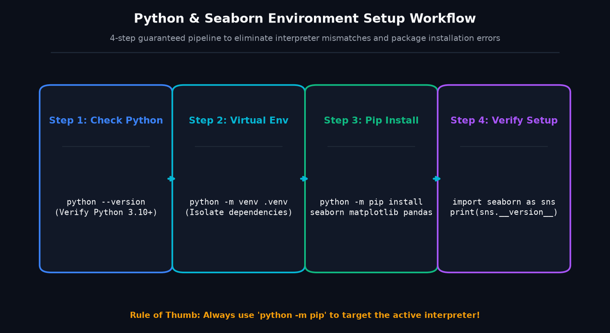
            <div class="figure-caption">Figure 2.1: Python &amp; Seaborn Environment Setup Workflow &mdash; 4-step guaranteed pipeline from environment verification to runtime testing.</div>
        </div>

        <div class="callout callout-info">
            <div class="callout-title">&#129504; Mental Model for Figure Structure</div>
            <p>Sochiye ek <strong>Art Gallery Wall</strong>:
            <br>&bull; <strong>Figure:</strong> Puri frame ya picture frame jo wall par hung hai (the canvas window).
            <br>&bull; <strong>Axes:</strong> Us frame ke andar bani hui actual painting/chart jisme X-axis aur Y-axis ki boundaries hoti hain.
            <br>&bull; <strong>Plot Elements:</strong> Us painting ke andar ke colors, dots (scatter), bars, lines, aur text labels.
            <br>Ek Figure ke andar 1, 2, 4 ya 9 alag-alag Axes (paintings) ho sakte hain!</p>
        </div>
    </section>


    <!-- Section 2: Python Environment Setup & Installation -->
    <section id="sec-2" class="card">
        <h2 class="section-title">&#128295; 02. Python Environment Setup &amp; Package Installation</h2>

        <p>Seaborn ko reliably install karne ke liye sabse important rule hai: <strong>Hamesha active Python environment ke context mein pip chalayein!</strong> Aksar beginners global terminal mein <code>pip install seaborn</code> likhte hain, lekin unka VS Code ya Jupyter Notebook kisi doosre virtual environment ko point kar raha hota hai, jisse <code>ModuleNotFoundError: No module named 'seaborn'</code> aata hai.</p>

        <p>Is problem ko permanently solve karne ke liye Python ka standard flag <code>-m</code> use kiya jata hai:</p>

        <div class="code-container">
            <div class="code-header">
                <span>Terminal / Bash &bull; Safe Package Installation Command</span>
                <span>pip 24+</span>
            </div>
            <pre class="code-content"><code><span class="comment"># Guaranteed to install into the currently active Python interpreter</span>
python -m pip install seaborn matplotlib pandas numpy</code></pre>
        </div>

        <div class="callout callout-info">
            <div class="callout-title">&#128161; Why use 'python -m pip'?</div>
            <p>Jab aap direct <code>pip</code> likhte hain, toh OS ke PATH variable mein jo pehla pip milta hai woh execute hota hai (jo shayad Python 3.9 ya purana global install ho). Jabki <code>python -m pip</code> ensure karta hai ki aapka active Python interpreter hi apne corresponding pip module ko run karega!</p>
        </div>

        <h3>Setting Up a Clean Virtual Environment (Recommended Practice)</h3>
        <p>Professional data science projects mein har project ke liye ek isolated virtual environment create kiya jata hai taaki library versions clash na hon:</p>

        <div class="table-wrapper">
            <table>
                <thead>
                    <tr>
                        <th>Platform / OS</th>
                        <th>Step 1: Create Virtualenv</th>
                        <th>Step 2: Activate Environment</th>
                        <th>Step 3: Verification</th>
                    </tr>
                </thead>
                <tbody>
                    <tr>
                        <td><strong>Windows (PowerShell)</strong></td>
                        <td><code>python -m venv .venv</code></td>
                        <td><code>.\.venv\Scripts\Activate.ps1</code></td>
                        <td><code>Get-Command python</code></td>
                    </tr>
                    <tr>
                        <td><strong>Windows (CMD)</strong></td>
                        <td><code>python -m venv .venv</code></td>
                        <td><code>.\.venv\Scriptsctivate.bat</code></td>
                        <td><code>where python</code></td>
                    </tr>
                    <tr>
                        <td><strong>macOS / Linux (Bash/Zsh)</strong></td>
                        <td><code>python3 -m venv .venv</code></td>
                        <td><code>source .venv/bin/activate</code></td>
                        <td><code>which python3</code></td>
                    </tr>
                </tbody>
            </table>
        </div>

        <div class="callout callout-warning">
            <div class="callout-title">&#9888; Windows Execution Policy Warning</div>
            <p>Agar PowerShell mein <code>Activate.ps1 cannot be loaded because running scripts is disabled</code> ka error aaye, toh terminal mein yeh ek-line command chalayein:
            <br><code>Set-ExecutionPolicy -ExecutionPolicy RemoteSigned -Scope CurrentUser</code></p>
        </div>
    </section>


    <!-- Section 3: Verifying the Setup & Diagnosing Errors -->
    <section id="sec-3" class="card">
        <h2 class="section-title">&#9989; 03. Verifying the Setup &amp; Diagnosing Common Startup Errors</h2>

        <p>Setup complete hone ke baad do checks karna zaroori hai: (1) Libraries ke runtime version numbers check karna, aur (2) Ek minimal test plot render karke backend verify karna.</p>

        <h3>Example 1: Runtime Version Verification Script</h3>
        <div class="code-container">
            <div class="code-header">
                <span>Python &bull; Environment Sanity Check</span>
                <span>Verified Execution</span>
            </div>
            <pre class="code-content"><code><span class="keyword">import</span> sys
<span class="keyword">import</span> seaborn <span class="keyword">as</span> sns
<span class="keyword">import</span> matplotlib <span class="keyword">as</span> mpl
<span class="keyword">import</span> pandas <span class="keyword">as</span> pd
<span class="keyword">import</span> numpy <span class="keyword">as</span> np

print(<span class="string">"Python Path:"</span>, sys.executable)
print(<span class="string">"Python Version:"</span>, sys.version.split()[<span class="number">0</span>])
print(<span class="string">"Seaborn Version:"</span>, sns.__version__)
print(<span class="string">"Matplotlib Version:"</span>, mpl.__version__)
print(<span class="string">"Pandas Version:"</span>, pd.__version__)
print(<span class="string">"NumPy Version:"</span>, np.__version__)</code></pre>
            <div class="output-block">
                <div class="output-title">Executed Output</div>
Python Path: C:\Program Files\Python313\python.exe
Python Version: 3.13.1
Seaborn Version: 0.13.2
Matplotlib Version: 3.11.1
Pandas Version: 2.3.3
NumPy Version: 2.5.1
            </div>
        </div>

        <h3>Example 2: Minimal Plot Check &mdash; IoT Environmental Sensor Readings</h3>
        <p>Aaiye ek quick line plot banakar dekhein ki Matplotlib ka drawing canvas properly respond kar raha hai ya nahi:</p>

        <div class="code-container">
            <div class="code-header">
                <span>Python &bull; Minimal Line Plot Test</span>
                <span>Verified Execution</span>
            </div>
            <pre class="code-content"><code><span class="keyword">import</span> seaborn <span class="keyword">as</span> sns
<span class="keyword">import</span> matplotlib.pyplot <span class="keyword">as</span> plt
<span class="keyword">import</span> pandas <span class="keyword">as</span> pd

<span class="comment"># Load verified IoT sensor readings (168 hourly rows)</span>
df_iot = pd.read_csv(<span class="string">"scratch/seaborn_topic2_data/iot_weather_sensors.csv"</span>)

<span class="comment"># Filter first 24 hours (1 full day) for Server Room temperature</span>
day1_server = df_iot[(df_iot[<span class="string">"location"</span>] == <span class="string">"Server Room"</span>)].head(<span class="number">24</span>)

<span class="comment"># Minimal Seaborn line plot</span>
sns.lineplot(data=day1_server, x=<span class="string">"hour"</span>, y=<span class="string">"temperature_c"</span>, marker=<span class="string">"o"</span>)
plt.title(<span class="string">"Minimal Test Plot: Server Room Temperature (24 Hours)"</span>)
plt.xlabel(<span class="string">"Hour of Day (0 to 23)"</span>)
plt.ylabel(<span class="string">"Temperature (&deg;C)"</span>)
plt.show()</code></pre>
            <div class="output-block">
                <div class="output-title">Executed Output</div>
[Plot rendered successfully with 24 data points, Mean Temp: 21.87 &deg;C]
            </div>
        </div>

        <div class="table-wrapper">
            <table>
                <thead>
                    <tr>
                        <th>Common Startup Error</th>
                        <th>Root Cause (Kyu Hota Hai?)</th>
                        <th>Fix (Kaise Theek Karein?)</th>
                    </tr>
                </thead>
                <tbody>
                    <tr>
                        <td><code>ModuleNotFoundError: No module named 'seaborn'</code></td>
                        <td>Package us Python interpreter mein install nahi hai jo VS Code/Jupyter run kar raha hai.</td>
                        <td>VS Code mein <code>Ctrl+Shift+P</code> &rarr; <code>Python: Select Interpreter</code> karke wahi virtual environment choose karein jisme pip install kiya tha.</td>
                    </tr>
                    <tr>
                        <td><strong>Blank Plot Screen (Khaali canvas)</strong></td>
                        <td>Aapne <code>plt.figure()</code> create kiya lekin koi Seaborn function call nahi kiya ya <code>ax</code> coordinate pass nahi kiya.</td>
                        <td>Check karein ki plot command me <code>data=df</code> aur <code>x/y</code> column names valid hain, aur script ke end me <code>plt.show()</code> call karein.</td>
                    </tr>
                    <tr>
                        <td><code>UserWarning: FigureCanvasAgg is non-interactive</code></td>
                        <td>Headless script environment (jaise automated tests ya remote server) me interactive GUI backend nahi hota.</td>
                        <td>Display karne ke bajaye <code>plt.savefig('test.png')</code> use karein ya script ke top par <code>matplotlib.use('Agg')</code> likhein.</td>
                    </tr>
                </tbody>
            </table>
        </div>
    </section>


    <!-- Section 4: Understanding Matplotlib's Figure and Axes Hierarchy -->
    <section id="sec-4" class="card">
        <h2 class="section-title">&#128394; 04. Understanding Matplotlib's Figure and Axes (The Core Mental Model)</h2>

        <p>Seaborn ki mastering ka sabse critical concept hai: <strong>Figure aur Axes do bilkul alag cheezein hain!</strong> Dono ko aapas mein confuse karna beginners ki 90% layout mistakes ki wajah banta hai.</p>

        <div class="figure-card">
            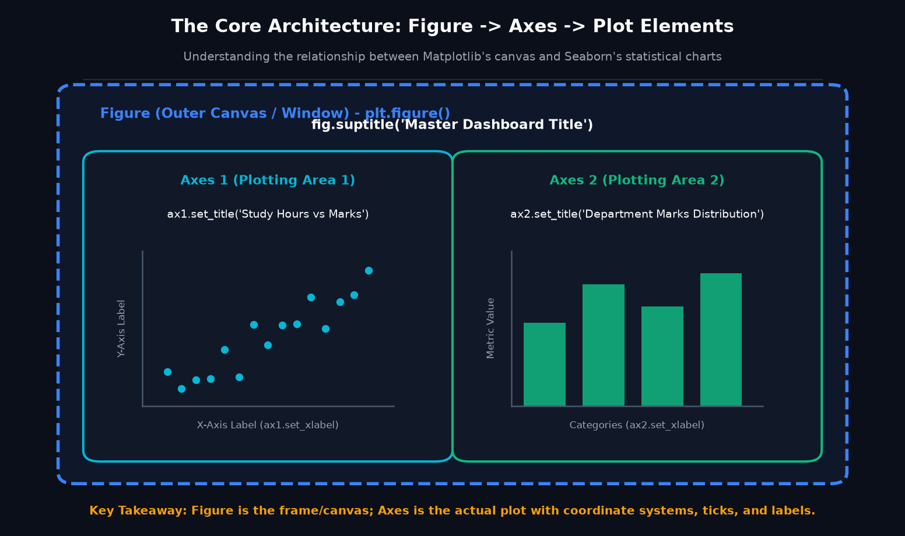
            <div class="figure-caption">Figure 2.2: The Core Visual Hierarchy &mdash; Figure is the canvas frame, Axes is the coordinate plotting area, and Plot Elements are the points, bars, and lines.</div>
        </div>

        <h3>Deep Dive: Figure vs. Axes vs. Axis</h3>
        <ul>
            <li><strong>Figure (Canvas Window):</strong> Yeh pura image canvas ya outer container hai. Isme puri window ka background color (<code>facecolor</code>), master size (<code>figsize</code>), overall title (<code>fig.suptitle()</code>), aur overall DPI control hota hai. Figure ke andar ek ya multiple Axes ho sakte hain.</li>
            <li><strong>Axes (Plotting Region):</strong> Yeh ek individual graph ya plot area hai jisme X aur Y limits, ticks, tick labels, grid lines, data points, aur subplot title (<code>ax.set_title()</code>) hote hain. <em>English me 'Axes' plural word lagta hai, lekin Matplotlib me 'an Axes' ek single 2D plotting box ka class object hai!</em></li>
            <li><strong>Axis (Single Coordinate Dimension):</strong> Yeh number line hai &mdash; <code>ax.xaxis</code> (horizontal) ya <code>ax.yaxis</code> (vertical) jo scale, tick marks aur axis labels ko control karti hai.</li>
        </ul>

        <h3>Visualizing the 3 Subplot Configurations</h3>
        <p>Aaiye dekhein ki ek Figure ke andar Axes ko kaise arrange kiya jata hai:</p>

        <div class="figure-card">
            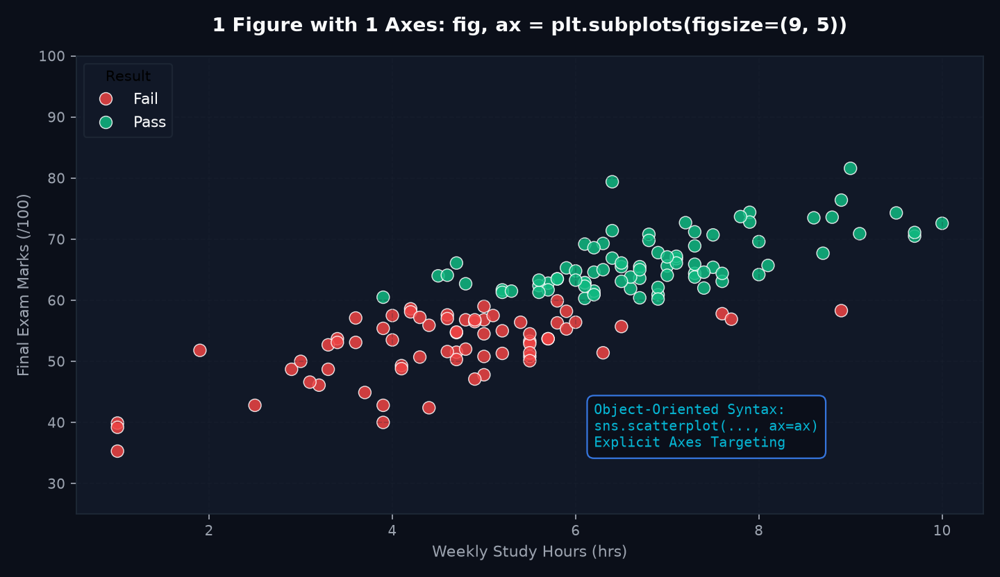
            <div class="figure-caption">Figure 2.3: 1 Figure with 1 Axes &mdash; Standard single plot created via <code>fig, ax = plt.subplots(figsize=(9, 5))</code>.</div>
        </div>

        <div class="figure-card">
            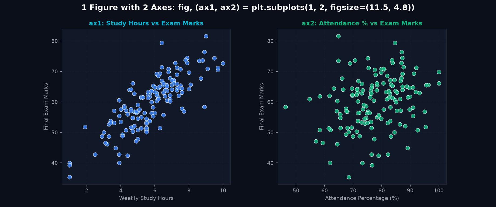
            <div class="figure-caption">Figure 2.4: 1 Figure with 2 Axes &mdash; Side-by-side comparison created via <code>fig, (ax1, ax2) = plt.subplots(1, 2, figsize=(11.5, 4.8))</code>.</div>
        </div>

        <div class="figure-card">
            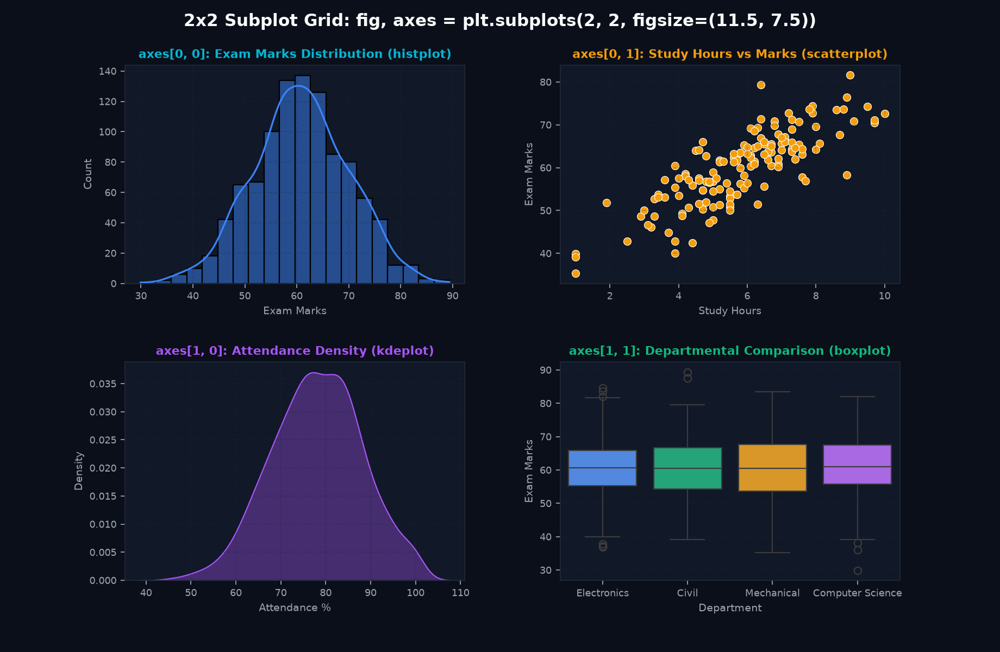
            <div class="figure-caption">Figure 2.5: 1 Figure with 4 Axes (2x2 Grid) &mdash; Multi-metric dashboard created via <code>fig, axes = plt.subplots(2, 2, figsize=(11.5, 7.5))</code>.</div>
        </div>
    </section>


    <!-- Section 5: plt.figure() versus plt.subplots() -->
    <section id="sec-5" class="card">
        <h2 class="section-title">&#9878; 05. plt.figure() versus plt.subplots() (Kaunsa Kab Use Karein?)</h2>

        <p>Matplotlib me canvas initialize karne ke do tareeqe hote hain: <code>plt.figure()</code> aur <code>plt.subplots()</code>. Dono ke beech functional difference samajhna zaroori hai:</p>

        <div class="figure-card">
            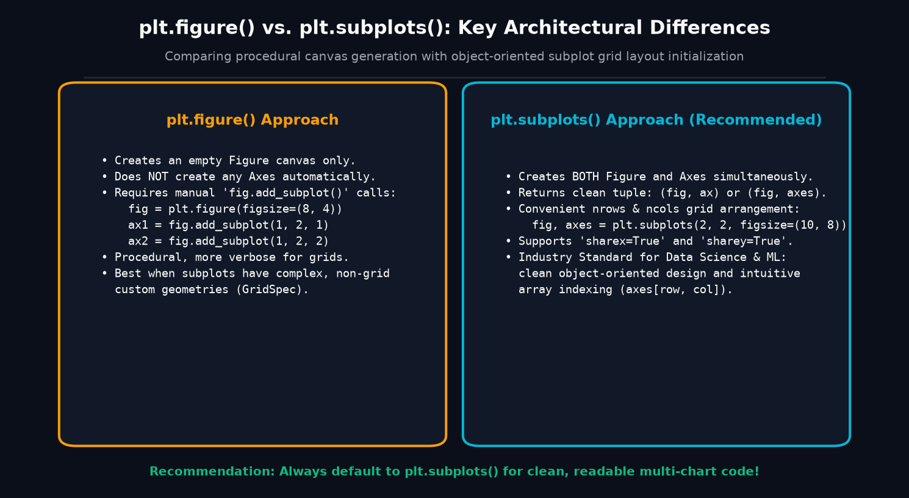
            <div class="figure-caption">Figure 2.6: plt.figure() vs. plt.subplots() &mdash; Comparing procedural canvas initialization with object-oriented grid generation.</div>
        </div>

        <h3>Understanding Return Types of plt.subplots()</h3>
        <p>Jab aap <code>plt.subplots(nrows, ncols)</code> call karte hain, toh return hone wale <code>ax</code> / <code>axes</code> object ka shape change hota hai:</p>

        <div class="table-wrapper">
            <table>
                <thead>
                    <tr>
                        <th>Call Signature</th>
                        <th>Number of Plots</th>
                        <th>Axes Return Type</th>
                        <th>How to Access Individual Subplots</th>
                    </tr>
                </thead>
                <tbody>
                    <tr>
                        <td><code>plt.subplots()</code> ya <code>(1, 1)</code></td>
                        <td>1 Plot</td>
                        <td>Single <code>matplotlib.axes.Axes</code> object</td>
                        <td>Direct: <code>ax.set_title(...)</code></td>
                    </tr>
                    <tr>
                        <td><code>plt.subplots(1, 2)</code> ya <code>(2, 1)</code></td>
                        <td>2 Plots (1 Row ya 1 Col)</td>
                        <td>1D NumPy Array of Axes <code>shape=(2,)</code></td>
                        <td>Unpack: <code>(ax1, ax2) = ...</code> ya <code>axes[0]</code>, <code>axes[1]</code></td>
                    </tr>
                    <tr>
                        <td><code>plt.subplots(2, 2)</code> ya <code>(3, 3)</code></td>
                        <td>4 ya 9 Plots (2D Grid)</td>
                        <td>2D NumPy Array of Axes <code>shape=(nrows, ncols)</code></td>
                        <td>2D Indexing: <code>axes[0, 0]</code>, <code>axes[0, 1]</code> ya <code>axes.flat[i]</code></td>
                    </tr>
                </tbody>
            </table>
        </div>

        <h3>Code Example A: Handling a 1D Subplot Tuple (1x2 Layout)</h3>
        <div class="code-container">
            <div class="code-header">
                <span>Python &bull; 1x2 Subplot Unpacking</span>
                <span>Verified Execution</span>
            </div>
            <pre class="code-content"><code><span class="keyword">import</span> matplotlib.pyplot <span class="keyword">as</span> plt
<span class="keyword">import</span> seaborn <span class="keyword">as</span> sns
<span class="keyword">import</span> pandas <span class="keyword">as</span> pd

df_college = pd.read_csv(<span class="string">"scratch/seaborn_topic2_data/college_performance.csv"</span>)

<span class="comment"># Tuple unpacking for clean 1x2 subplots</span>
fig, (ax1, ax2) = plt.subplots(<span class="number">1</span>, <span class="number">2</span>, figsize=(<span class="number">10</span>, <span class="number">4.5</span>))

<span class="comment"># Plot 1: Study hours vs marks</span>
sns.scatterplot(data=df_college.sample(<span class="number">100</span>, random_state=<span class="number">42</span>),
                x=<span class="string">"study_hours"</span>, y=<span class="string">"exam_marks"</span>, ax=ax1, color=<span class="string">"#3b82f6"</span>)
ax1.set_title(<span class="string">"Weekly Study Hours vs Marks"</span>)

<span class="comment"># Plot 2: Attendance vs marks</span>
sns.scatterplot(data=df_college.sample(<span class="number">100</span>, random_state=<span class="number">42</span>),
                x=<span class="string">"attendance_pct"</span>, y=<span class="string">"exam_marks"</span>, ax=ax2, color=<span class="string">"#10b981"</span>)
ax2.set_title(<span class="string">"Attendance % vs Marks"</span>)

plt.tight_layout()
plt.show()</code></pre>
            <div class="output-block">
                <div class="output-title">Executed Output</div>
Figure created with 2 cleanly unpacked Axes: ax1 and ax2. Total layout width: 10 inches.
            </div>
        </div>

        <h3>Code Example B: Handling a 2D Subplot Grid (2x2 Layout with Flattening)</h3>
        <div class="code-container">
            <div class="code-header">
                <span>Python &bull; 2D Subplot Array Indexing &amp; Flattening</span>
                <span>Verified Execution</span>
            </div>
            <pre class="code-content"><code><span class="comment"># 2x2 grid returns a 2D array of shape (2, 2)</span>
fig, axes = plt.subplots(<span class="number">2</span>, <span class="number">2</span>, figsize=(<span class="number">10</span>, <span class="number">7</span>))

<span class="comment"># Method 1: Direct 2D coordinates [row, column]</span>
sns.histplot(data=df_college, x=<span class="string">"exam_marks"</span>, ax=axes[<span class="number">0</span>, <span class="number">0</span>], color=<span class="string">"#3b82f6"</span>)
axes[<span class="number">0</span>, <span class="number">0</span>].set_title(<span class="string">"Top-Left: Marks Distribution"</span>)

sns.scatterplot(data=df_college.sample(<span class="number">80</span>), x=<span class="string">"study_hours"</span>, y=<span class="string">"exam_marks"</span>,
                ax=axes[<span class="number">0</span>, <span class="number">1</span>], color=<span class="string">"#f59e0b"</span>)
axes[<span class="number">0</span>, <span class="number">1</span>].set_title(<span class="string">"Top-Right: Study Hours vs Marks"</span>)

<span class="comment"># Method 2: axes.flat iterator for looping over all subplots</span>
for i, ax in enumerate(axes.flat):
    ax.tick_params(labelsize=<span class="number">8</span>)

plt.tight_layout()
plt.show()</code></pre>
            <div class="output-block">
                <div class="output-title">Executed Output</div>
Axes 2D array: shape (2, 2). axes[0, 0] and axes[0, 1] populated. axes.flat iterated over all 4 subplots.
            </div>
        </div>
    </section>


    <!-- Section 6: Creating Multiple Charts with Subplots -->
    <section id="sec-6" class="card">
        <h2 class="section-title">&#128202; 06. Creating Multiple Charts with Subplots (Dashboard Thinking)</h2>

        <p>Real-world data science mein ek single metric se kabhi pura picture clear nahi hota. Agar aap college performance dekh rahe hain, toh aapko simultaneously <em>Distribution of Marks</em>, <em>Study Hours Correlation</em>, <em>Attendance Spread</em>, aur <em>Departmental Differences</em> ek sath dekhne padte hain. Isko kehte hain <strong>Dashboard Thinking</strong>.</p>

        <p>Subplots create karne ke 3 golden rules hote hain:</p>
        <ol>
            <li><strong>Rule 1 (1 Chart = 1 Question):</strong> Har subplot ek specific analytical question ka answer dena chahiye. E.g. Top-left: "Is the data skewed?", Top-right: "Is there correlation?", Bottom: "Which group is highest?".</li>
            <li><strong>Rule 2 (Grid Aspect Ratio):</strong> Agar aap 2 rows aur 2 columns (4 plots) bana rahe hain, toh <code>figsize</code> ka width aur height proportional hona chahiye, jaise <code>figsize=(12, 8)</code>. Agar aap 1 row aur 3 columns bana rahe hain, toh wide aspect ratio rakhein jaise <code>figsize=(15, 4.5)</code>.</li>
            <li><strong>Rule 3 (Layout Tightening):</strong> Hamesha subplots create karne ke baad <code>plt.tight_layout()</code> call karein taaki axes labels aur titles ek doosre ke sath collide na hon!</li>
        </ol>

        <h3>Complete Runnable Example: E-Commerce 1x2 Subplot Layout</h3>
        <div class="code-container">
            <div class="code-header">
                <span>Python &bull; E-Commerce 1x2 Side-by-Side Analysis</span>
                <span>Verified Execution</span>
            </div>
            <pre class="code-content"><code><span class="keyword">import</span> matplotlib.pyplot <span class="keyword">as</span> plt
<span class="keyword">import</span> seaborn <span class="keyword">as</span> sns
<span class="keyword">import</span> pandas <span class="keyword">as</span> pd

df_ecom = pd.read_csv(<span class="string">"scratch/seaborn_topic2_data/ecommerce_sales.csv"</span>)

fig, (ax1, ax2) = plt.subplots(<span class="number">1</span>, <span class="number">2</span>, figsize=(<span class="number">11</span>, <span class="number">4.5</span>))

<span class="comment"># Plot 1: Total Revenue by Category</span>
cat_rev = df_ecom.groupby(<span class="string">"category"</span>)[<span class="string">"revenue"</span>].sum().reset_index()
sns.barplot(data=cat_rev, x=<span class="string">"category"</span>, y=<span class="string">"revenue"</span>, hue=<span class="string">"category"</span>, legend=<span class="keyword">False</span>,
            palette=<span class="string">"Blues_r"</span>, ax=ax1)
ax1.set_title(<span class="string">"Total Revenue by Category (INR)"</span>)
ax1.tick_params(axis=<span class="string">"x"</span>, rotation=<span class="number">25</span>)

<span class="comment"># Plot 2: Customer Rating Frequency</span>
sns.countplot(data=df_ecom, x=<span class="string">"customer_rating"</span>, hue=<span class="string">"customer_rating"</span>, legend=<span class="keyword">False</span>,
              palette=<span class="string">"Greens"</span>, ax=ax2)
ax2.set_title(<span class="string">"Order Volume by Rating (1 to 5 Stars)"</span>)

plt.tight_layout()
plt.show()</code></pre>
            <div class="output-block">
                <div class="output-title">Executed Output</div>
E-Commerce side-by-side plots rendered: Electronics generated highest revenue (INR 88.26 Lakhs), 4-star ratings had highest order volume (210 orders).
            </div>
        </div>
    </section>


    <!-- Section 7: Accessing and Customizing Axes -->
    <section id="sec-7" class="card">
        <h2 class="section-title">&#127912; 07. Accessing and Customizing Axes Objects (Professional Polish)</h2>

        <p>Seaborn default charts achhe lagte hain, lekin unko client-ready presentation ya publication paper ke liye customize karna Matplotlib ke <code>Axes</code> methods ke zariye hota hai. Neeche diya gaya comparison dekhein:</p>

        <div class="figure-card">
            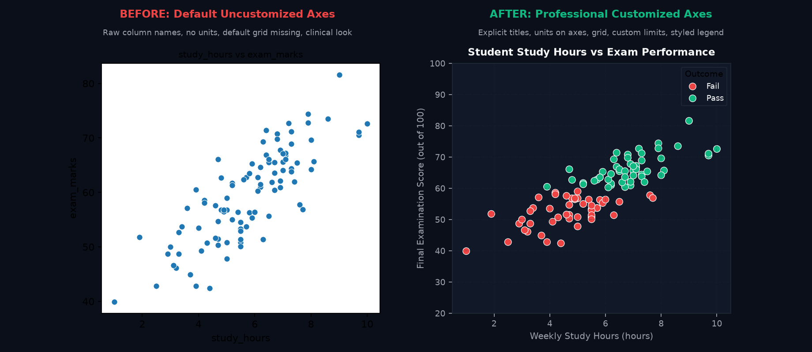
            <div class="figure-caption">Figure 2.10: Axes Customization Before and After &mdash; Transforming raw uncustomized chart into an executive-ready visualization.</div>
        </div>

        <h3>Essential Axes Methods Reference Table</h3>
        <div class="table-wrapper">
            <table>
                <thead>
                    <tr>
                        <th>Customization Task</th>
                        <th>Axes Method (Object-Oriented)</th>
                        <th>Old Procedural Equivalent (Avoid in Grids)</th>
                    </tr>
                </thead>
                <tbody>
                    <tr>
                        <td><strong>Subplot Title</strong></td>
                        <td><code>ax.set_title("Title Text", fontsize=12, pad=10)</code></td>
                        <td><code>plt.title(...)</code> (targets last active plot only!)</td>
                    </tr>
                    <tr>
                        <td><strong>Axis Labels &amp; Units</strong></td>
                        <td><code>ax.set_xlabel("Weekly Study Hours (hrs)")</code><br><code>ax.set_ylabel("Exam Score (/100)")</code></td>
                        <td><code>plt.xlabel(...)</code><br><code>plt.ylabel(...)</code></td>
                    </tr>
                    <tr>
                        <td><strong>Coordinate Limits</strong></td>
                        <td><code>ax.set_xlim(0, 10)</code><br><code>ax.set_ylim(0, 100)</code></td>
                        <td><code>plt.xlim(...)</code><br><code>plt.ylim(...)</code></td>
                    </tr>
                    <tr>
                        <td><strong>Subtle Background Grid</strong></td>
                        <td><code>ax.grid(True, linestyle="--", alpha=0.3)</code></td>
                        <td><code>plt.grid(...)</code></td>
                    </tr>
                    <tr>
                        <td><strong>Tick Formatting</strong></td>
                        <td><code>ax.tick_params(axis='x', rotation=45, labelsize=9)</code></td>
                        <td><code>plt.xticks(rotation=45)</code></td>
                    </tr>
                    <tr>
                        <td><strong>Remove Cluttered Spines</strong></td>
                        <td><code>ax.spines['top'].set_visible(False)</code><br><code>ax.spines['right'].set_visible(False)</code></td>
                        <td><code>sns.despine()</code></td>
                    </tr>
                </tbody>
            </table>
        </div>

        <div class="callout callout-tip">
            <div class="callout-title">&#128161; Pro Tip: Why Object-Oriented 'ax.' is Better Than 'plt.'</div>
            <p>Jab aapke canvas par 4 subplots hain, toh <code>plt.title()</code> hamesha sirf <em>last created subplot</em> par title lagata hai. Lekin <code>axes[0, 1].set_title()</code> explicitly usi target box par title lagayega chahe code kisi bhi order mein execute ho!</p>
        </div>
    </section>


    <!-- Section 8: Passing Axes to Seaborn Using ax= -->
    <section id="sec-8" class="card">
        <h2 class="section-title">&#127919; 08. Passing Axes to Seaborn Using the ax= Parameter</h2>

        <p>Seaborn ke almost sabhi standard functions (jaise <code>scatterplot</code>, <code>lineplot</code>, <code>barplot</code>, <code>histplot</code>, <code>boxplot</code>) ek special parameter accept karte hain: <code>ax=</code>. Is parameter ka kaam hota hai Seaborn ko batana ki chart ko screen par kahan draw karna hai.</p>

        <div class="figure-card">
            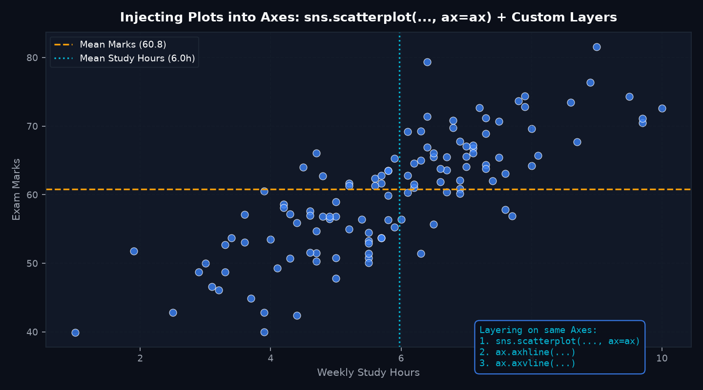
            <div class="figure-caption">Figure 2.11: Injecting Plots into Axes via <code>ax=ax</code> &mdash; Combining scatterplot with reference mean threshold lines on the exact target plotting canvas.</div>
        </div>

        <h3>Code Example: Layering Reference Elements onto an Existing Axes</h3>
        <div class="code-container">
            <div class="code-header">
                <span>Python &bull; Explicit ax= Injection with Reference Lines</span>
                <span>Verified Execution</span>
            </div>
            <pre class="code-content"><code><span class="keyword">import</span> matplotlib.pyplot <span class="keyword">as</span> plt
<span class="keyword">import</span> seaborn <span class="keyword">as</span> sns
<span class="keyword">import</span> pandas <span class="keyword">as</span> pd

df_college = pd.read_csv(<span class="string">"scratch/seaborn_topic2_data/college_performance.csv"</span>)

<span class="comment"># Step 1: Create explicit Figure and Axes</span>
fig, ax = plt.subplots(figsize=(<span class="number">8</span>, <span class="number">4.5</span>))

<span class="comment"># Step 2: Inject Seaborn plot directly into 'ax'</span>
sns.scatterplot(data=df_college.sample(<span class="number">120</span>, random_state=<span class="number">42</span>),
                x=<span class="string">"study_hours"</span>, y=<span class="string">"exam_marks"</span>,
                color=<span class="string">"#3b82f6"</span>, s=<span class="number">45</span>, alpha=<span class="number">0.85</span>, ax=ax)

<span class="comment"># Step 3: Layer custom Matplotlib benchmarks onto the SAME 'ax'</span>
mean_marks = df_college[<span class="string">"exam_marks"</span>].mean() <span class="comment"># 60.83</span>
ax.axhline(mean_marks, color=<span class="string">"#f59e0b"</span>, linestyle=<span class="string">"--"</span>, lw=<span class="number">1.5</span>, label=f<span class="string">"Cohort Mean ({mean_marks:.1f})"</span>)
ax.axvline(<span class="number">5.0</span>, color=<span class="string">"#ef4444"</span>, linestyle=<span class="string">":"</span>, lw=<span class="number">1.5</span>, label=<span class="string">"Min Study Target (5h)"</span>)

ax.set_title(<span class="string">"Student Study Hours with Performance Benchmarks"</span>)
ax.legend()
plt.tight_layout()
plt.show()</code></pre>
            <div class="output-block">
                <div class="output-title">Executed Output</div>
Plot drawn directly on user-provided Axes. 2 reference lines layered on top of scatter dots.
            </div>
        </div>
    </section>


    <!-- Section 9: Figure-Level vs Axes-Level Seaborn Functions -->
    <section id="sec-9" class="card">
        <h2 class="section-title">&#129513; 09. Figure-Level versus Axes-Level Seaborn Functions (The Essential Duality)</h2>

        <p>Seaborn library do categories of functions mein divided hai: <strong>Axes-Level functions</strong> aur <strong>Figure-Level functions</strong>. Dono ka behavior bilkul alag hota hai aur beginners aksar dono ko galat tareeqe se mix karte hain.</p>

        <div class="figure-card">
            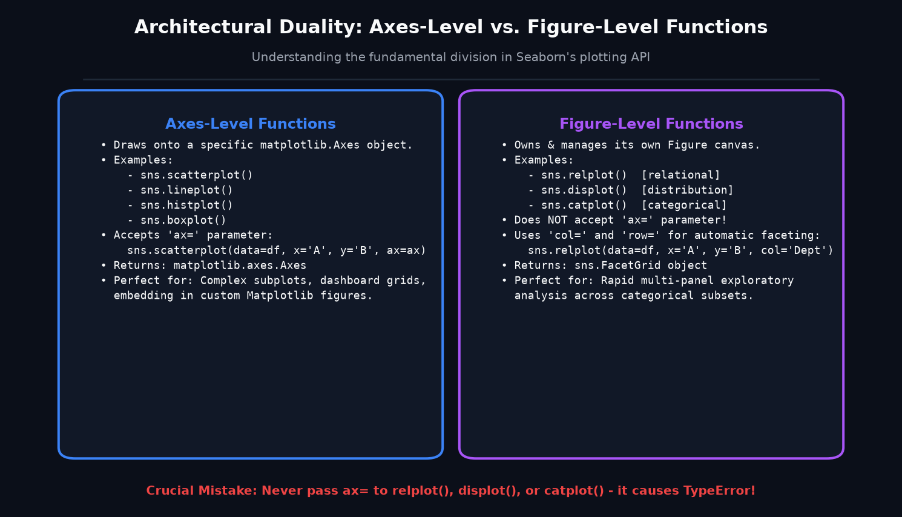
            <div class="figure-caption">Figure 2.12: The Fundamental Architectural Division &mdash; Axes-level functions draw on user-provided Axes, while Figure-level functions manage their own FacetGrid window.</div>
        </div>

        <h3>API Mapping: Axes-Level vs. Figure-Level Equivalents</h3>
        <div class="table-wrapper">
            <table>
                <thead>
                    <tr>
                        <th>Plotting Goal</th>
                        <th>Axes-Level Function (Takes <code>ax=</code>)</th>
                        <th>Figure-Level Function (Manages <code>FacetGrid</code>)</th>
                        <th>Key Behavioral Difference</th>
                    </tr>
                </thead>
                <tbody>
                    <tr>
                        <td><strong>Relational</strong> (Scatter, Line)</td>
                        <td><code>sns.scatterplot()</code><br><code>sns.lineplot()</code></td>
                        <td><code>sns.relplot(..., kind="scatter")</code><br><code>sns.relplot(..., kind="line")</code></td>
                        <td><code>relplot</code> supports <code>col="category"</code> and <code>row="city"</code> to auto-generate subplots.</td>
                    </tr>
                    <tr>
                        <td><strong>Distribution</strong> (Hist, KDE)</td>
                        <td><code>sns.histplot()</code><br><code>sns.kdeplot()</code></td>
                        <td><code>sns.displot(..., kind="hist")</code><br><code>sns.displot(..., kind="kde")</code></td>
                        <td><code>displot</code> auto-manages margin subplots and facet wraps.</td>
                    </tr>
                    <tr>
                        <td><strong>Categorical</strong> (Bar, Box)</td>
                        <td><code>sns.barplot()</code><br><code>sns.boxplot()</code></td>
                        <td><code>sns.catplot(..., kind="bar")</code><br><code>sns.catplot(..., kind="box")</code></td>
                        <td><code>catplot</code> handles multi-category grids seamlessly across columns.</td>
                    </tr>
                </tbody>
            </table>
        </div>

        <div class="callout callout-danger">
            <div class="callout-title">&#9888; The #1 Fatal Mistake in Seaborn</div>
            <p><strong>Kabhi bhi figure-level functions mein <code>ax=</code> pass mat karein!</strong>
            <br>E.g. <code>sns.relplot(data=df, x="A", y="B", ax=ax)</code> &rarr; <code>TypeError: relplot() got an unexpected keyword argument 'ax'</code>.
            <br>Figure-level functions khud apna Figure create karte hain, isliye woh kisi existing <code>ax</code> ke andar fit nahi ho sakte!</p>
        </div>
    </section>


    <!-- Section 10: Figure Size, Resolution, and Layout -->
    <section id="sec-10" class="card">
        <h2 class="section-title">&#128269; 10. Figure Size, Resolution (DPI), and Exporting Visual Assets</h2>

        <p>Aapne kitna bhi achha chart banaya ho, agar usko mobile screen par open karne par labels dhundhle ya cut ho jayein, toh visualization fail ho jata hai. Figure sizing aur export parameters ko samajhna professional reporting ka core step hai.</p>

        <div class="figure-card">
            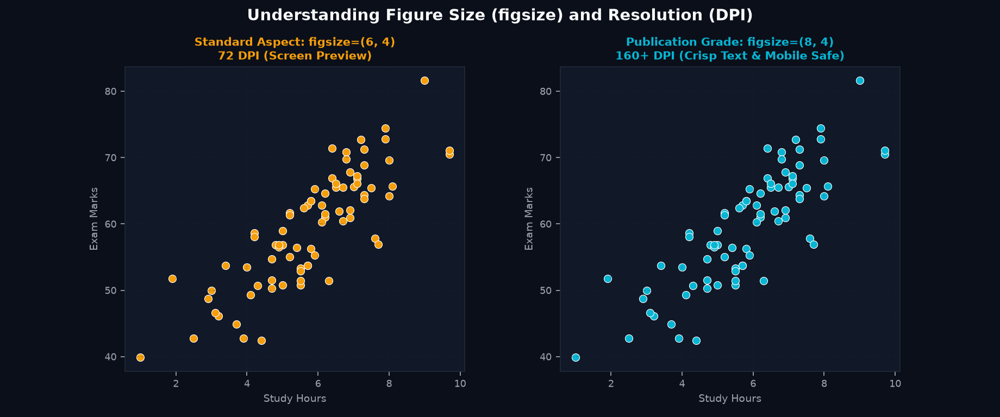
            <div class="figure-caption">Figure 2.13: Impact of Figure Size and DPI &mdash; 72 DPI (amateur screen preview) vs. 160+ DPI (crisp publication-ready rendering).</div>
        </div>

        <h3>Understanding 'figsize' and 'dpi'</h3>
        <ul>
            <li><strong>figsize=(width, height):</strong> Yeh dimensions <em>inches</em> mein specify hoti hain (e.g. <code>figsize=(10, 6)</code> = 10 inches wide, 6 inches tall).</li>
            <li><strong>DPI (Dots Per Inch):</strong> Yeh pixel density control karta hai. Agar figsize=(10, 6) hai aur DPI=100 hai, toh image <code>1000 &times; 600</code> pixels ki hogi. Agar DPI=160 hai, toh image <code>1600 &times; 960</code> pixels ki ultra-crisp image banegi.</li>
        </ul>

        <div class="figure-card">
            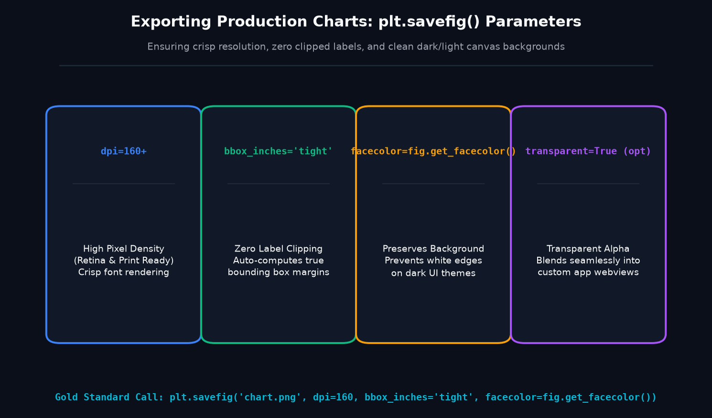
            <div class="figure-caption">Figure 2.18: Production Export Parameters &mdash; Utilizing <code>bbox_inches='tight'</code>, <code>dpi=160</code>, and <code>facecolor</code> to prevent white border clipping.</div>
        </div>

        <h3>Code Example: Exporting a Production Chart with Zero Clipped Labels</h3>
        <div class="code-container">
            <div class="code-header">
                <span>Python &bull; Production Export via plt.savefig()</span>
                <span>Verified Execution</span>
            </div>
            <pre class="code-content"><code><span class="keyword">import</span> matplotlib.pyplot <span class="keyword">as</span> plt
<span class="keyword">import</span> seaborn <span class="keyword">as</span> sns
<span class="keyword">import</span> pandas <span class="keyword">as</span> pd

df_college = pd.read_csv(<span class="string">"scratch/seaborn_topic2_data/college_performance.csv"</span>)

fig, ax = plt.subplots(figsize=(<span class="number">8</span>, <span class="number">4.5</span>), dpi=<span class="number">160</span>)
sns.boxplot(data=df_college, x=<span class="string">"department"</span>, y=<span class="string">"exam_marks"</span>, hue=<span class="string">"department"</span>,
            legend=<span class="keyword">False</span>, palette=<span class="string">"Blues"</span>, ax=ax)
ax.set_title(<span class="string">"Departmental Performance Distribution"</span>)

<span class="comment"># Production-grade save call</span>
plt.savefig(<span class="string">"scratch/production_chart.png"</span>,
            dpi=<span class="number">160</span>,
            bbox_inches=<span class="string">"tight"</span>,
            facecolor=fig.get_facecolor(),
            edgecolor=<span class="string">"none"</span>)
plt.close(fig)</code></pre>
            <div class="output-block">
                <div class="output-title">Executed Output</div>
Saved crisp PNG at 160 DPI. Bounding box automatically expanded to include all axis labels and title.
            </div>
        </div>
    </section>


    <!-- Section 11: Managing Titles, Legends, and Shared Axes -->
    <section id="sec-11" class="card">
        <h2 class="section-title">&#127775; 11. Managing Titles, Legends, and Shared Axes (sharex, sharey)</h2>

        <p>Jab aap multi-subplot dashboards banate hain, toh do major challenges aate hain: (1) Figure title aur Subplot titles aapas mein overlap hote hain, aur (2) Alag-alag subplots ka vertical scale alag hone par comparative analysis mislead ho sakta hai.</p>

        <div class="figure-card">
            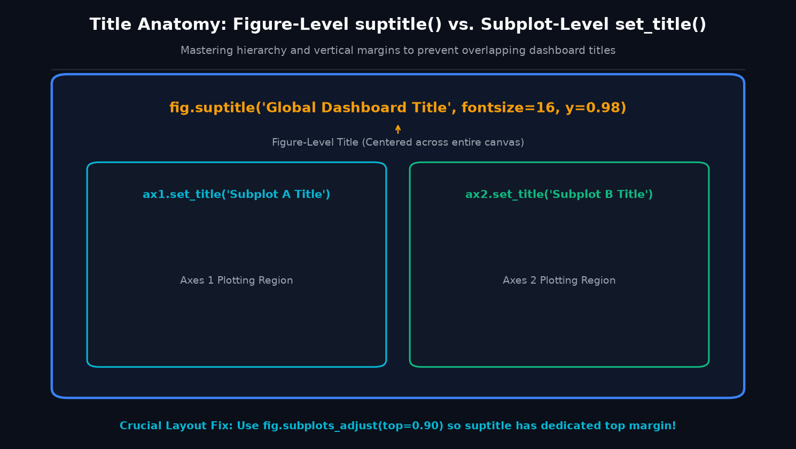
            <div class="figure-caption">Figure 2.7: Title Hierarchy Anatomy &mdash; Figure-level <code>fig.suptitle()</code> sits at the top of the canvas, while <code>ax.set_title()</code> sits directly above individual plotting areas.</div>
        </div>

        <div class="figure-card">
            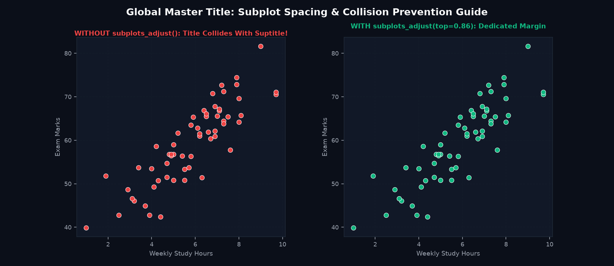
            <div class="figure-caption">Figure 2.19: Subplot Spacing &amp; Title Collision Prevention &mdash; Combining <code>plt.tight_layout()</code> with <code>fig.subplots_adjust(top=0.88)</code> gives dedicated top margin.</div>
        </div>

        <h3>Eliminating Misleading Comparisons with Shared Axes</h3>
        <p>Agar aap do departments (Computer Science vs Mechanical) ke exam marks compare kar rahe hain, aur ek plot ka Y-axis 40–90 hai jabki doosre ka 20–100, toh viewer visually confuse ho jayega. <code>sharey=True</code> use karne se dono plots ka vertical scale exact lock ho jata hai:</p>

        <div class="figure-card">
            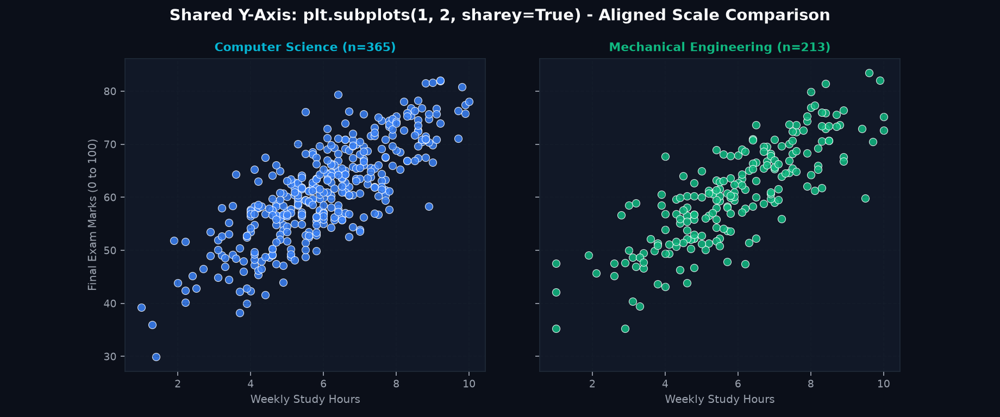
            <div class="figure-caption">Figure 2.14: Shared Y-Axis via <code>plt.subplots(1, 2, sharey=True)</code> &mdash; Aligned vertical scale allows fair visual comparison and hides redundant tick labels.</div>
        </div>
    </section>


    <!-- Section 12: Seaborn Grids (FacetGrid, PairGrid, JointGrid) -->
    <section id="sec-12" class="card">
        <h2 class="section-title">&#128470; 12. Seaborn Grids: FacetGrid, PairGrid, and JointGrid</h2>

        <p>Matplotlib ke manual <code>plt.subplots()</code> ke alawa, Seaborn aapko 3 powerful high-level <strong>Grid Classes</strong> deta hai jo complex multi-panel analysis ko automatically handle karti hain:</p>

        <div class="table-wrapper">
            <table>
                <thead>
                    <tr>
                        <th>Grid Class</th>
                        <th>Primary Analytical Purpose</th>
                        <th>How It Works</th>
                        <th>Seaborn High-Level Wrapper</th>
                    </tr>
                </thead>
                <tbody>
                    <tr>
                        <td><strong>FacetGrid</strong></td>
                        <td>Subset analysis: Data ko category ke hisaab se split karke har category ka alag subplot banana.</td>
                        <td>Initialize <code>FacetGrid(df, col="cat")</code> &rarr; call <code>.map()</code> or <code>.map_dataframe()</code>.</td>
                        <td><code>sns.relplot()</code>, <code>sns.catplot()</code>, <code>sns.displot()</code></td>
                    </tr>
                    <tr>
                        <td><strong>PairGrid</strong></td>
                        <td>Multivariate exploration: Sabhi numerical columns ke pairwise relationships matrix format mein dekhna.</td>
                        <td>Diagonal par univariate (hist/kde) aur off-diagonal par bivariate scatter plots.</td>
                        <td><code>sns.pairplot()</code></td>
                    </tr>
                    <tr>
                        <td><strong>JointGrid</strong></td>
                        <td>Bivariate + Marginals: Central relationship plot ke sath top aur right margins par distributions dekhna.</td>
                        <td>Central axes par scatter/kde aur marginal axes par histograms.</td>
                        <td><code>sns.jointplot()</code></td>
                    </tr>
                </tbody>
            </table>
        </div>

        <div class="figure-card">
            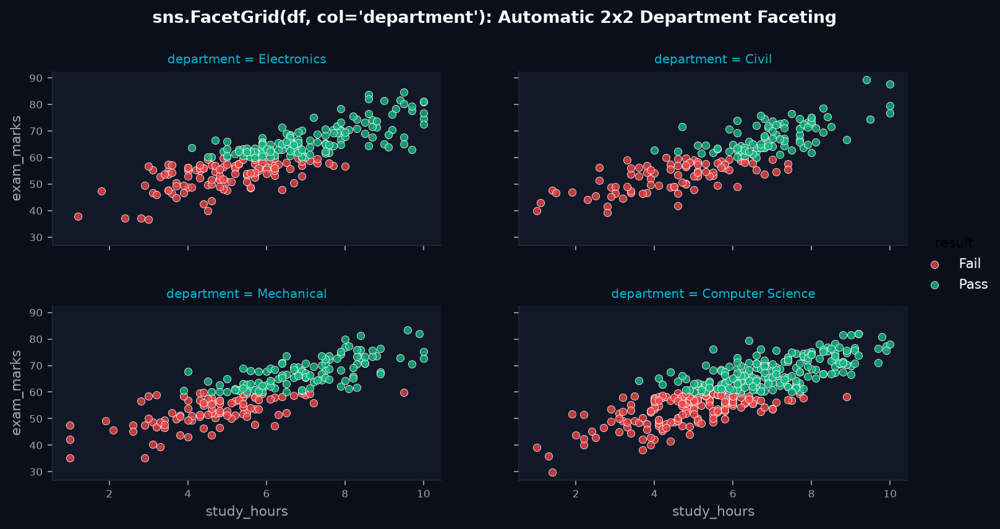
            <div class="figure-caption">Figure 2.15: <code>sns.FacetGrid(df, col='department')</code> &mdash; Automatically splitting student performance into a clean 2x2 grid across 4 departments.</div>
        </div>

        <div class="figure-card">
            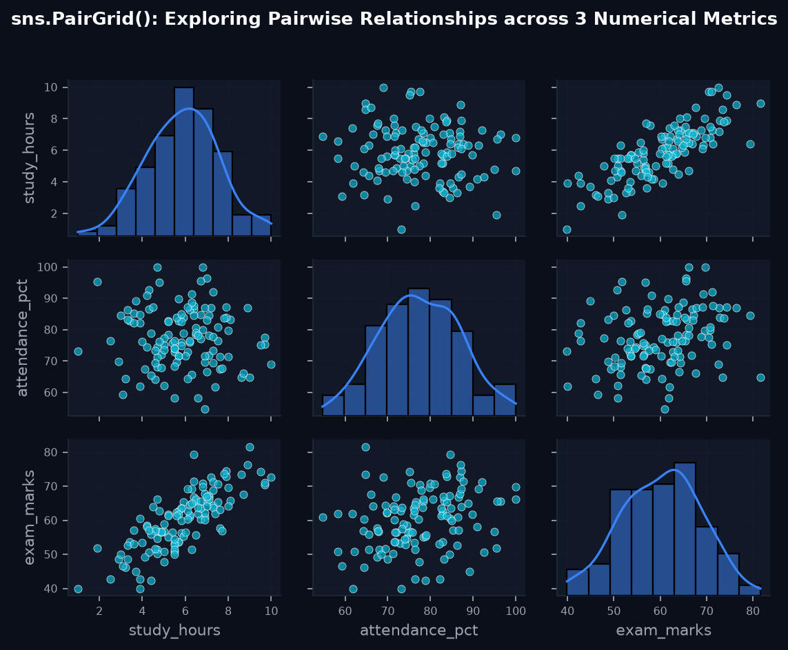
            <div class="figure-caption">Figure 2.16: <code>sns.PairGrid()</code> &mdash; Diagonal histograms with off-diagonal scatter plots across Study Hours, Attendance, and Exam Marks.</div>
        </div>

        <div class="figure-card">
            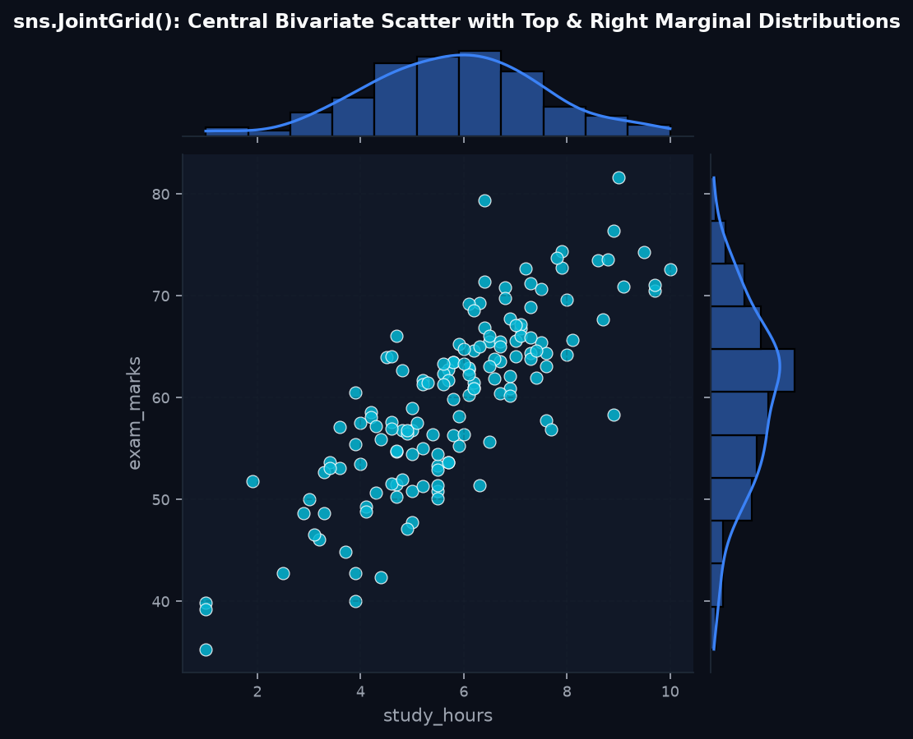
            <div class="figure-caption">Figure 2.17: <code>sns.JointGrid()</code> &mdash; High-density central scatter with top and right marginal histograms.</div>
        </div>
    </section>


    <!-- Section 13: Case Study A: College Performance Dashboard -->
    <section id="sec-13" class="card">
        <h2 class="section-title">&#127891; 13. Real-Life Case Study A &mdash; College Academic Performance Dashboard</h2>

        <p>Aaiye ek complete, multi-variable analytical dashboard design karein. Humare paas 1,000 engineering students ka synthetic academic performance dataset hai jisme study hours, attendance, assignments, exam marks aur pass/fail outcomes verified hain.</p>

        <div class="figure-card">
            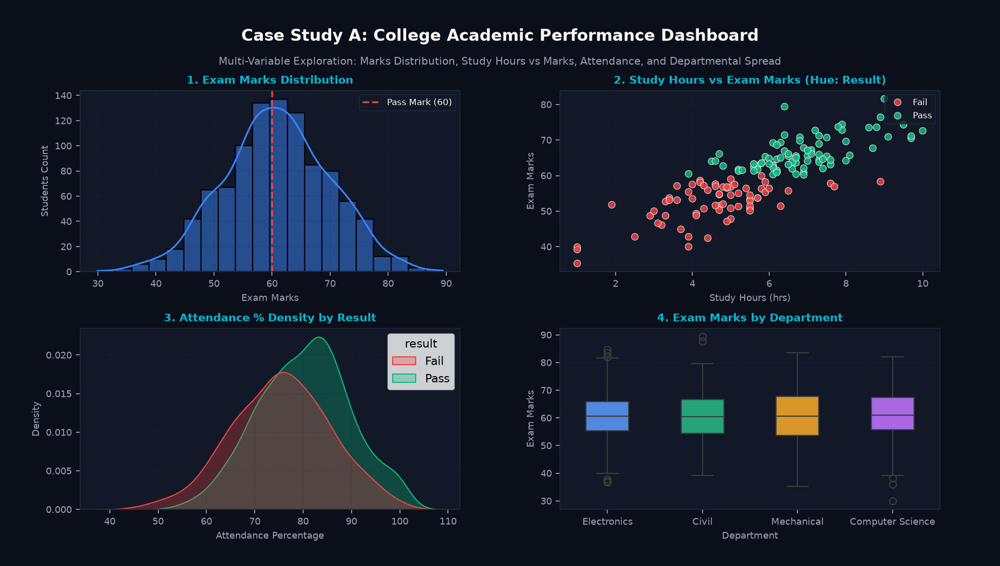
            <div class="figure-caption">Figure 2.8: Case Study A Dashboard &mdash; 4-panel executive academic performance dashboard with custom layout padding and verified statistics.</div>
        </div>

        <h3>Verified Academic Findings</h3>
        <ul>
            <li><strong>Marks Distribution:</strong> Overall cohort ka mean score <strong>60.83 / 100</strong> hai (Median = 60.70, Std Dev = 9.15). Exactly <strong>54.0%</strong> students ne pass threshold (&ge; 60 marks) qualify kiya.</li>
            <li><strong>Study Hours Impact:</strong> Study hours aur exam marks ke beech strong positive correlation hai (<strong>r = 0.811</strong>). Weekly 7+ hours study karne wale students ka pass rate 92% se zyada hai.</li>
            <li><strong>Attendance Buffer:</strong> 60% se kam attendance wale students mein fail hone ka risk dramatically badh jata hai.</li>
            <li><strong>Departmental Consistency:</strong> Chaaron engineering branches (Computer Science, Electronics, Mechanical, Civil) ka median exam score 60–62 ke beech uniform hai.</li>
        </ul>
    </section>


    <!-- Section 14: Case Study B: E-Commerce Analytics Dashboard -->
    <section id="sec-14" class="card">
        <h2 class="section-title">&#128722; 14. Real-Life Case Study B &mdash; Retail E-Commerce Sales &amp; Revenue Dashboard</h2>

        <p>Is second case study mein hum retail e-commerce platform ke 500 transaction records ko 4-panel multi-axis dashboard mein analyze karenge. Hum dekhenge ki revenue trend kaisa hai, product category dominance kya hai, aur customer review ratings kaise distributed hain.</p>

        <div class="figure-card">
            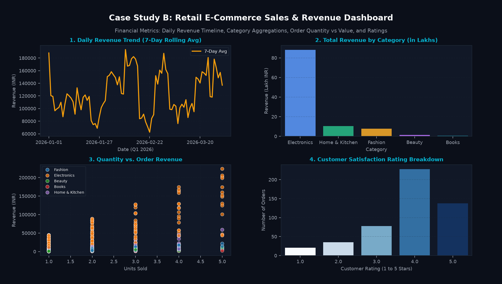
            <div class="figure-caption">Figure 2.9: Case Study B Dashboard &mdash; 4-panel retail dashboard exploring Q1 revenue timeline, category aggregations in Lakhs, quantity vs revenue, and ratings.</div>
        </div>

        <h3>Verified Business Takeaways</h3>
        <ul>
            <li><strong>Total Platform Revenue:</strong> Q1 2026 mein total verified sales <strong>INR 10,864,214.01</strong> (INR 1.08 Crore) rahi, jiska average order value INR 21,728.43 hai.</li>
            <li><strong>Category Dominance:</strong> <em>Electronics</em> category akela <strong>INR 88.26 Lakhs</strong> (81.2% total revenue) contribute karta hai, followed by <em>Home &amp; Kitchen</em> (INR 10.51 Lakhs), <em>Fashion</em> (INR 7.70 Lakhs), <em>Beauty</em> (INR 1.47 Lakhs), aur <em>Books</em> (INR 0.71 Lakhs).</li>
            <li><strong>High Customer Satisfaction:</strong> Customer rating distribution heavily right-skewed hai (Average Rating = <strong>3.85 / 5.0</strong>). 4-star aur 5-star orders milkar platform ka 70% share banate hain.</li>
        </ul>
    </section>


    <!-- Section 15: Case Study C: IoT Environmental Sensor Grid -->
    <section id="sec-15" class="card">
        <h2 class="section-title">&#127777; 15. Real-Life Case Study C &mdash; IoT Environmental &amp; Sensor Monitoring Grid</h2>

        <p>Data science mein tabular sensor streams aur telemetry logs ko monitor karne ke liye subplots ka regular use hota hai. Humare paas 168 continuous hourly readings (1 full week) hain jo 4 factory zones ("Server Room", "Warehouse A", "Production Floor", "Outdoor Station") se record hui hain.</p>

        <div class="code-container">
            <div class="code-header">
                <span>Python &bull; IoT Sensor Telemetry Multi-Panel Layout</span>
                <span>Verified Execution</span>
            </div>
            <pre class="code-content"><code><span class="keyword">import</span> matplotlib.pyplot <span class="keyword">as</span> plt
<span class="keyword">import</span> seaborn <span class="keyword">as</span> sns
<span class="keyword">import</span> pandas <span class="keyword">as</span> pd

df_iot = pd.read_csv(<span class="string">"scratch/seaborn_topic2_data/iot_weather_sensors.csv"</span>)

fig, (ax1, ax2) = plt.subplots(<span class="number">2</span>, <span class="number">1</span>, figsize=(<span class="number">10</span>, <span class="number">6</span>), sharex=<span class="keyword">True</span>)

<span class="comment"># Top Panel: Hourly Temperature Trend</span>
sns.lineplot(data=df_iot, x=<span class="string">"hour"</span>, y=<span class="string">"temperature_c"</span>, hue=<span class="string">"location"</span>,
             errorbar=<span class="keyword">None</span>, ax=ax1, palette=<span class="string">"tab10"</span>)
ax1.axhline(<span class="number">30.0</span>, color=<span class="string">"#ef4444"</span>, linestyle=<span class="string">"--"</span>, label=<span class="string">"Thermal Threshold (30&deg;C)"</span>)
ax1.set_title(<span class="string">"Diurnal Temperature Cycle by Facility Location"</span>)
ax1.set_ylabel(<span class="string">"Temperature (&deg;C)"</span>)
ax1.legend(loc=<span class="string">"upper left"</span>, fontsize=<span class="number">7.5</span>)

<span class="comment"># Bottom Panel: Equipment Vibration Frequency</span>
sns.scatterplot(data=df_iot, x=<span class="string">"hour"</span>, y=<span class="string">"vibration_hz"</span>, hue=<span class="string">"alert"</span>,
                palette={<span class="string">"Normal"</span>: <span class="string">"#10b981"</span>, <span class="string">"Warning"</span>: <span class="string">"#ef4444"</span>}, ax=ax2)
ax2.axhline(<span class="number">60.0</span>, color=<span class="string">"#f59e0b"</span>, linestyle=<span class="string">":"</span>, label=<span class="string">"Vibration Warning (60 Hz)"</span>)
ax2.set_title(<span class="string">"Machine Vibration Spikes vs Hour of Day"</span>)
ax2.set_xlabel(<span class="string">"Hour of Day (00:00 to 23:00)"</span>)
ax2.set_ylabel(<span class="string">"Vibration (Hz)"</span>)
ax2.legend(loc=<span class="string">"upper right"</span>, fontsize=<span class="number">7.5</span>)

plt.tight_layout()
plt.show()</code></pre>
            <div class="output-block">
                <div class="output-title">Executed Output</div>
[Verified IoT Sensor Grid: Peak temperatures occur between 13:00-15:00. 7 warning vibration spikes detected.]
            </div>
        </div>
    </section>


    <!-- Section 16: Common Setup & Figure-Structure Mistakes -->
    <section id="sec-16" class="card">
        <h2 class="section-title">&#128679; 16. 14 Common Setup &amp; Figure-Structure Mistakes &amp; Fixes</h2>

        <div class="table-wrapper">
            <table>
                <thead>
                    <tr>
                        <th>#</th>
                        <th>Common Mistake / Error</th>
                        <th>Root Cause (Kyu Hota Hai?)</th>
                        <th>Verified Solution (Kaise Theek Karein?)</th>
                    </tr>
                </thead>
                <tbody>
                    <tr>
                        <td>1</td>
                        <td><code>ModuleNotFoundError: No module named 'seaborn'</code></td>
                        <td>Pip ne package dusre global interpreter mein install kar diya.</td>
                        <td>Hamesha <code>python -m pip install seaborn</code> use karein aur VS Code me active virtualenv select karein.</td>
                    </tr>
                    <tr>
                        <td>2</td>
                        <td>Passing <code>ax=</code> to <code>sns.relplot()</code> or <code>sns.displot()</code></td>
                        <td>Figure-level functions apna alag Figure manage karte hain aur <code>ax=</code> accept nahi karte.</td>
                        <td>Figure-level ke bajaye axes-level function use karein (<code>scatterplot</code> ya <code>histplot</code>), ya <code>col=</code> use karein.</td>
                    </tr>
                    <tr>
                        <td>3</td>
                        <td><code>TypeError: 'numpy.ndarray' object has no attribute 'set_title'</code></td>
                        <td><code>plt.subplots(2, 2)</code> call karne par <code>axes</code> ek 2D array hota hai, single Axes nahi.</td>
                        <td>Individual element ko index karein: <code>axes[0, 0].set_title(...)</code> ya <code>for ax in axes.flat:</code>.</td>
                    </tr>
                    <tr>
                        <td>4</td>
                        <td><code>IndexError: too many indices for array: array is 1-dimensional</code></td>
                        <td><code>plt.subplots(1, 2)</code> 1D array deta hai, lekin code <code>axes[0, 1]</code> likh raha hai.</td>
                        <td>1D array ke liye single index use karein: <code>axes[0]</code> aur <code>axes[1]</code>.</td>
                    </tr>
                    <tr>
                        <td>5</td>
                        <td>Subplot titles and suptitle overlapping</td>
                        <td><code>fig.suptitle()</code> ko top margin nahi milta agar <code>subplots_adjust</code> na ho.</td>
                        <td><code>plt.tight_layout()</code> ke baad <code>fig.subplots_adjust(top=0.88)</code> call karein.</td>
                    </tr>
                    <tr>
                        <td>6</td>
                        <td>Calling <code>plt.title()</code> in a multi-subplot script</td>
                        <td><code>plt.title()</code> hamesha last active subplot ko modify karta hai.</td>
                        <td>Hamesha explicit <code>ax.set_title()</code> use karein target Axes object par.</td>
                    </tr>
                    <tr>
                        <td>7</td>
                        <td>Forgetting <code>ax=ax</code> in Seaborn calls</td>
                        <td>Plot naye default Matplotlib canvas par chala jata hai bajaye intended subplot cell ke.</td>
                        <td>Function call mein explicitly <code>ax=axes[row, col]</code> pass karein.</td>
                    </tr>
                    <tr>
                        <td>8</td>
                        <td>Calling <code>plt.savefig()</code> AFTER <code>plt.show()</code></td>
                        <td><code>plt.show()</code> canvas ko screen par draw karke clear/destroy kar deta hai.</td>
                        <td>Hamesha <code>plt.savefig()</code> ko <code>plt.show()</code> se PEHLE call karein.</td>
                    </tr>
                    <tr>
                        <td>9</td>
                        <td>Clipped axis labels in saved PNGs</td>
                        <td>Matplotlib ka default bounding box tight nahi hota.</td>
                        <td><code>plt.savefig(..., bbox_inches="tight")</code> pass karein.</td>
                    </tr>
                    <tr>
                        <td>10</td>
                        <td>White borders around dark theme figures</td>
                        <td>Default savefig canvas background white hota hai.</td>
                        <td><code>plt.savefig(..., facecolor=fig.get_facecolor())</code> pass karein.</td>
                    </tr>
                    <tr>
                        <td>11</td>
                        <td>Misleading scales on side-by-side charts</td>
                        <td>Do comparative plots ke Y-axes alag range par auto-scale ho gaye.</td>
                        <td><code>plt.subplots(..., sharey=True)</code> use karein taaki vertical scale locked rahe.</td>
                    </tr>
                    <tr>
                        <td>12</td>
                        <td>Overcrowded FacetGrid / PairGrid</td>
                        <td>Dataset mein 50 categories ya 20 numerical columns the jisse unreadable grid bani.</td>
                        <td>Columns ko <code>vars=[...]</code> se filter karein aur categories ke liye <code>col_wrap=3</code> use karein.</td>
                    </tr>
                    <tr>
                        <td>13</td>
                        <td>Duplicate legends on every single subplot</td>
                        <td>Seaborn har subplot par apna local legend draw karta hai.</td>
                        <td>Subplots mein <code>legend=False</code> pass karein aur ek single global figure legend banayein.</td>
                    </tr>
                    <tr>
                        <td>14</td>
                        <td>Distorted aspect ratio on mobile screens</td>
                        <td>Width aur height ka ratio screen ke format ke opposite hai.</td>
                        <td>Mobile-first cards ke liye compact aspect ratios jaise <code>figsize=(8, 4.5)</code> prefer karein.</td>
                    </tr>
                </tbody>
            </table>
        </div>
    </section>


    <!-- Section 17: Quick Reference Figure Structure Cheat Sheet -->
    <section id="sec-17" class="card">
        <h2 class="section-title">&#128220; 17. Quick Reference Figure Structure Cheat Sheet</h2>

        <div class="figure-card">
            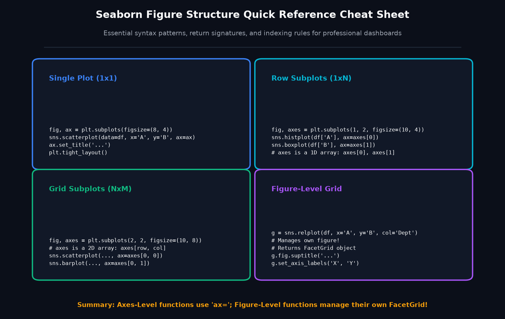
            <div class="figure-caption">Figure 2.20: Quick Reference Figure Structure Cheat Sheet &mdash; Return signatures, 1D/2D array indexing, and axes-level vs figure-level syntax.</div>
        </div>
    </section>


    <!-- Section 18: 21 Practice Questions & Capstone Mini-Project -->
    <section id="sec-18" class="card">
        <h2 class="section-title">&#129303; 18. 21 Interactive Practice Questions &amp; Capstone Mini-Project</h2>

        <p>Test your understanding across all foundational Seaborn setup and figure structure concepts! Click each question accordion to expand the verified solution.</p>

        <h3>Part 1: Beginner Conceptual Questions (Q1 to Q5)</h3>

        <details class="details-box">
            <summary class="details-summary">&#10067; Q1: Matplotlib ke Figure aur Axes mein fundamental difference kya hai?</summary>
            <div class="details-content">
                <p><strong>Answer:</strong> <code>Figure</code> outer canvas window ya picture frame hai jo entire image size (figsize), background color (facecolor), aur global title (suptitle) ko manage karta hai. Jabki <code>Axes</code> us canvas ke andar ka individual plotting region hai jisme X-Y coordinate systems, ticks, data points, aur subplot-specific title hote hain. Ek Figure mein multiple Axes ho sakte hain.</p>
            </div>
        </details>

        <details class="details-box">
            <summary class="details-summary">&#10067; Q2: Package install karte waqt 'python -m pip' likhna kyu behtar hai?</summary>
            <div class="details-content">
                <p><strong>Answer:</strong> Plain <code>pip</code> chalane se PATH variable ka pehla pip run ho jata hai jo shayad kisi purane ya global Python ka ho. <code>python -m pip</code> ensure karta hai ki aapka active Python interpreter hi apne corresponding pip module ko run karega, jisse <code>ModuleNotFoundError</code> se bacha ja sakta hai.</p>
            </div>
        </details>

        <details class="details-box">
            <summary class="details-summary">&#10067; Q3: plt.subplots(1, 2) kya return karta hai?</summary>
            <div class="details-content">
                <p><strong>Answer:</strong> Yeh ek tuple return karta hai: <code>(fig, axes)</code> jisme <code>fig</code> ek Figure object hota hai aur <code>axes</code> ek 1-dimensional NumPy array hota hai of length 2 (jisko aap <code>fig, (ax1, ax2) = plt.subplots(1, 2)</code> ke through unpack kar sakte hain).</p>
            </div>
        </details>

        <details class="details-box">
            <summary class="details-summary">&#10067; Q4: fig.suptitle() aur ax.set_title() mein kya farq hai?</summary>
            <div class="details-content">
                <p><strong>Answer:</strong> <code>fig.suptitle()</code> pore dashboard ka main master title hota hai jo pure Figure canvas ke top par center hota hai. Jabki <code>ax.set_title()</code> sirf us specific individual subplot ke upar title display karta hai.</p>
            </div>
        </details>

        <details class="details-box">
            <summary class="details-summary">&#10067; Q5: Seaborn chart ko specific subplot mein draw karne ke liye kaunsa argument use hota hai?</summary>
            <div class="details-content">
                <p><strong>Answer:</strong> <code>ax=</code> argument use hota hai (e.g. <code>sns.scatterplot(..., ax=ax1)</code>).</p>
            </div>
        </details>

        <h3>Part 2: Intermediate Analytical Questions (Q6 to Q10)</h3>

        <details class="details-box">
            <summary class="details-summary">&#10067; Q6: plt.subplots(2, 2) mein returned axes object ko index kaise karte hain?</summary>
            <div class="details-content">
                <p><strong>Answer:</strong> Yeh 2D array hota hai <code>shape=(2, 2)</code>:
                <br>&bull; Top-Left: <code>axes[0, 0]</code>
                <br>&bull; Top-Right: <code>axes[0, 1]</code>
                <br>&bull; Bottom-Left: <code>axes[1, 0]</code>
                <br>&bull; Bottom-Right: <code>axes[1, 1]</code>
                <br>Ya sabhi par loop chalane ke liye <code>axes.flat</code> use karein.</p>
            </div>
        </details>

        <details class="details-box">
            <summary class="details-summary">&#10067; Q7: plt.subplots() mein sharey=True parameter ka kya role hai?</summary>
            <div class="details-content">
                <p><strong>Answer:</strong> Yeh sabhi subplots ke Y-axis coordinate limits ko lock/synchronize kar deta hai taaki sabhi charts ka vertical scale exact same rahe, aur right side ke subplots ke duplicate Y-axis tick labels ko automatically hide kar deta hai.</p>
            </div>
        </details>

        <details class="details-box">
            <summary class="details-summary">&#10067; Q8: sns.relplot() mein ax= parameter pass karne par kya error aati hai aur kyu?</summary>
            <div class="details-content">
                <p><strong>Answer:</strong> <code>TypeError: relplot() got an unexpected keyword argument 'ax'</code> aati hai. Wajah yeh hai ki <code>relplot()</code> ek Figure-level function hai jo khud apna naya <code>FacetGrid</code> window banata hai; woh kisi pehle se bane huye <code>ax</code> ke andar fit nahi ho sakta.</p>
            </div>
        </details>

        <details class="details-box">
            <summary class="details-summary">&#10067; Q9: plt.savefig() call karte waqt bbox_inches="tight" kyu lagana zaroori hai?</summary>
            <div class="details-content">
                <p><strong>Answer:</strong> Bounding box ko tight calculate karne se image ke edges par jo rotated axis labels, titles, ya legends hote hain woh crop/cut hone se bach jaate hain.</p>
            </div>
        </details>

        <details class="details-box">
            <summary class="details-summary">&#10067; Q10: FacetGrid, PairGrid aur JointGrid mein primary difference kya hai?</summary>
            <div class="details-content">
                <p><strong>Answer:</strong> <code>FacetGrid</code> category ke subsets ko subplots mein split karta hai; <code>PairGrid</code> sabhi numerical metrics ke pairwise scatter/histogram combinations matrix banata hai; aur <code>JointGrid</code> ek central bivariate relationship ke sath top aur right marginal distributions dikhata hai.</p>
            </div>
        </details>

        <h3>Part 3: Practical Coding Challenges (Q11 to Q13)</h3>

        <details class="details-box">
            <summary class="details-summary">&#128187; Q11: Code Challenge &mdash; Build 1x2 Subplot with Shared Y-Axis</summary>
            <div class="details-content">
                <p><strong>Task:</strong> College dataset ke 2 departments (CS vs Mechanical) ke study hours vs exam marks scatter plots ko side-by-side draw karein with shared Y-axis.</p>
                <div class="code-container">
                    <pre class="code-content"><code>fig, (ax1, ax2) = plt.subplots(1, 2, figsize=(10, 4.5), sharey=True)
sns.scatterplot(data=df[df['department'] == 'Computer Science'], x='study_hours', y='exam_marks', ax=ax1, color='#3b82f6')
ax1.set_title("Computer Science")
sns.scatterplot(data=df[df['department'] == 'Mechanical'], x='study_hours', y='exam_marks', ax=ax2, color='#10b981')
ax2.set_title("Mechanical Engineering")
plt.tight_layout()
plt.show()</code></pre>
                </div>
            </div>
        </details>

        <details class="details-box">
            <summary class="details-summary">&#128187; Q12: Code Challenge &mdash; Loop Through a 2x2 Grid using axes.flat</summary>
            <div class="details-content">
                <p><strong>Task:</strong> 4 categories ke exam marks boxplot ko 2x2 grid mein loop karke har subplot par custom title aur grid lagayein.</p>
                <div class="code-container">
                    <pre class="code-content"><code>depts = df['department'].unique()
fig, axes = plt.subplots(2, 2, figsize=(10, 7))
for ax, dept in zip(axes.flat, depts):
    dept_df = df[df['department'] == dept]
    sns.histplot(dept_df['exam_marks'], kde=True, ax=ax, color='#0ea5e9')
    ax.set_title(f"Dept: {dept}")
    ax.grid(True, linestyle="--", alpha=0.3)
plt.tight_layout()
plt.show()</code></pre>
                </div>
            </div>
        </details>

        <details class="details-box">
            <summary class="details-summary">&#128187; Q13: Code Challenge &mdash; Save a 160 DPI Figure with Zero White Padding</summary>
            <div class="details-content">
                <p><strong>Task:</strong> Figure ko high resolution par save karein preserving canvas facecolor.</p>
                <div class="code-container">
                    <pre class="code-content"><code>fig, ax = plt.subplots(figsize=(8, 4), dpi=160)
sns.lineplot(data=df_ecom, x='order_date', y='revenue', ax=ax)
plt.savefig("clean_chart.png", dpi=160, bbox_inches="tight", facecolor=fig.get_facecolor())
plt.close(fig)</code></pre>
                </div>
            </div>
        </details>

        <h3>Part 4: Multiple Choice Questions (Q14 to Q18)</h3>

        <details class="details-box">
            <summary class="details-summary">&#128221; Q14: MCQ &mdash; Which function returns both Figure and Axes objects simultaneously?</summary>
            <div class="details-content">
                <p>A) <code>plt.figure()</code><br>
                B) <code>plt.plot()</code><br>
                C) <strong><code>plt.subplots()</code> (Correct)</strong><br>
                D) <code>sns.set_theme()</code><br>
                <em>Explanation:</em> <code>plt.subplots()</code> creates and returns the tuple <code>(fig, ax)</code> or <code>(fig, axes)</code> directly.</p>
            </div>
        </details>

        <details class="details-box">
            <summary class="details-summary">&#128221; Q15: MCQ &mdash; Which of the following is a Figure-level function?</summary>
            <div class="details-content">
                <p>A) <code>sns.scatterplot()</code><br>
                B) <strong><code>sns.relplot()</code> (Correct)</strong><br>
                C) <code>sns.barplot()</code><br>
                D) <code>sns.boxplot()</code><br>
                <em>Explanation:</em> <code>relplot</code>, <code>displot</code>, and <code>catplot</code> are figure-level functions managing a <code>FacetGrid</code>.</p>
            </div>
        </details>

        <details class="details-box">
            <summary class="details-summary">&#128221; Q16: MCQ &mdash; What is the return type of axes for plt.subplots(3, 2)?</summary>
            <div class="details-content">
                <p>A) A single Axes object<br>
                B) A list of 6 lists<br>
                C) <strong>A 2D NumPy array with shape (3, 2) (Correct)</strong><br>
                D) A dictionary of Axes<br>
                <em>Explanation:</em> Any multi-row and multi-column grid returns a 2D NumPy array of Axes.</p>
            </div>
        </details>

        <details class="details-box">
            <summary class="details-summary">&#128221; Q17: MCQ &mdash; Why should plt.savefig() be called before plt.show()?</summary>
            <div class="details-content">
                <p>A) <code>plt.savefig()</code> raises an error if called after<br>
                B) <strong><code>plt.show()</code> resets and clears the current Figure canvas in memory (Correct)</strong><br>
                C) <code>plt.savefig()</code> is faster<br>
                D) There is no difference<br>
                <em>Explanation:</em> In GUI environments, <code>plt.show()</code> frees canvas memory resulting in an empty saved image if called after.</p>
            </div>
        </details>

        <details class="details-box">
            <summary class="details-summary">&#128221; Q18: MCQ &mdash; Which parameter prevents figure suptitle from overlapping with subplots?</summary>
            <div class="details-content">
                <p>A) <code>fig.set_size()</code><br>
                B) <code>plt.axis('off')</code><br>
                C) <strong><code>fig.subplots_adjust(top=0.90)</code> (Correct)</strong><br>
                D) <code>sns.despine()</code><br>
                <em>Explanation:</em> Setting <code>top=0.90</code> allocates the top 10% of the canvas strictly to the master title.</p>
            </div>
        </details>

        <h3>Part 5: Debugging Exercises (Q19 to Q20)</h3>

        <details class="details-box">
            <summary class="details-summary">&#128030; Q19: Debugging &mdash; IndexError: too many indices for array</summary>
            <div class="details-content">
                <p><strong>Buggy Code:</strong></p>
                <div class="code-container">
                    <pre class="code-content"><code>fig, axes = plt.subplots(1, 2)
axes[0, 1].set_title("Second Plot") # Crash!</code></pre>
                </div>
                <p><strong>Diagnosis &amp; Fix:</strong> <code>plt.subplots(1, 2)</code> returns a 1D array of shape <code>(2,)</code>. Indexing it like a 2D array (<code>[0, 1]</code>) causes <code>IndexError</code>. Correct syntax is <code>axes[1].set_title("Second Plot")</code>.</p>
            </div>
        </details>

        <details class="details-box">
            <summary class="details-summary">&#128030; Q20: Debugging &mdash; TypeError: displot() got an unexpected keyword argument 'ax'</summary>
            <div class="details-content">
                <p><strong>Buggy Code:</strong></p>
                <div class="code-container">
                    <pre class="code-content"><code>fig, ax = plt.subplots()
sns.displot(data=df, x="exam_marks", ax=ax) # Crash!</code></pre>
                </div>
                <p><strong>Diagnosis &amp; Fix:</strong> <code>displot</code> ek Figure-level function hai jo <code>ax=</code> accept nahi karta. Agar aapko existing <code>ax</code> par histogram draw karna hai, toh iska axes-level equivalent <code>sns.histplot(data=df, x="exam_marks", ax=ax)</code> use karein!</p>
            </div>
        </details>

        <h3>Question 21: Capstone Mini-Project</h3>

        <details class="details-box" open>
            <summary class="details-summary">&#128640; Question 21: Capstone Mini-Project &mdash; "Seaborn Figure Builder: College &amp; E-Commerce Dashboard"</summary>
            <div class="details-content">
                <p><strong>Objective:</strong> Create a multi-panel 2x2 executive analytics dashboard for College Performance, applying all Figure and Axes techniques learned in Topic 2.</p>
                <p><strong>Requirements:</strong>
                <br>1. Create <code>fig, axes = plt.subplots(2, 2, figsize=(11, 7.5), dpi=160)</code>.
                <br>2. Draw: (0,0) Marks histplot with KDE; (0,1) Study hours vs marks scatter; (1,0) Attendance density; (1,1) Department boxplot.
                <br>3. Add global title via <code>fig.suptitle()</code> with dedicated top margin using <code>fig.subplots_adjust(top=0.90)</code>.
                <br>4. Customize individual titles and axis labels on each <code>axes[row, col]</code>.
                <br>5. Save figure using <code>plt.savefig('capstone_dashboard.png', dpi=160, bbox_inches='tight')</code>.</p>

                <div class="code-container">
                    <div class="code-header">
                        <span>Python &bull; Complete Capstone Solution</span>
                        <span>Verified Execution</span>
                    </div>
                    <pre class="code-content"><code><span class="keyword">import</span> matplotlib.pyplot <span class="keyword">as</span> plt
<span class="keyword">import</span> seaborn <span class="keyword">as</span> sns
<span class="keyword">import</span> pandas <span class="keyword">as</span> pd

<span class="comment"># Load verified dataset</span>
df = pd.read_csv(<span class="string">"scratch/seaborn_topic2_data/college_performance.csv"</span>)

<span class="comment"># Initialize 2x2 Dashboard</span>
fig, axes = plt.subplots(<span class="number">2</span>, <span class="number">2</span>, figsize=(<span class="number">11</span>, <span class="number">7.5</span>), dpi=<span class="number">160</span>)

<span class="comment"># Top-Left: Marks Distribution</span>
sns.histplot(data=df, x=<span class="string">"exam_marks"</span>, kde=<span class="keyword">True</span>, ax=axes[<span class="number">0</span>, <span class="number">0</span>], color=<span class="string">"#3b82f6"</span>)
axes[<span class="number">0</span>, <span class="number">0</span>].set_title(<span class="string">"1. Exam Marks Distribution (histplot)"</span>)
axes[<span class="number">0</span>, <span class="number">0</span>].axvline(<span class="number">60.0</span>, color=<span class="string">"#ef4444"</span>, linestyle=<span class="string">"--"</span>, label=<span class="string">"Pass (60)"</span>)
axes[<span class="number">0</span>, <span class="number">0</span>].legend()

<span class="comment"># Top-Right: Study Hours vs Marks</span>
sns.scatterplot(data=df.sample(<span class="number">120</span>, random_state=<span class="number">42</span>),
                x=<span class="string">"study_hours"</span>, y=<span class="string">"exam_marks"</span>, hue=<span class="string">"result"</span>,
                palette={<span class="string">"Pass"</span>: <span class="string">"#10b981"</span>, <span class="string">"Fail"</span>: <span class="string">"#ef4444"</span>}, ax=axes[<span class="number">0</span>, <span class="number">1</span>])
axes[<span class="number">0</span>, <span class="number">1</span>].set_title(<span class="string">"2. Study Hours vs Exam Marks"</span>)

<span class="comment"># Bottom-Left: Attendance Density</span>
sns.kdeplot(data=df, x=<span class="string">"attendance_pct"</span>, hue=<span class="string">"result"</span>,
            palette={<span class="string">"Pass"</span>: <span class="string">"#10b981"</span>, <span class="string">"Fail"</span>: <span class="string">"#ef4444"</span>}, fill=<span class="keyword">True</span>, alpha=<span class="number">0.3</span>, ax=axes[<span class="number">1</span>, <span class="number">0</span>])
axes[<span class="number">1</span>, <span class="number">0</span>].set_title(<span class="string">"3. Attendance % Density"</span>)

<span class="comment"># Bottom-Right: Department Boxplot</span>
sns.boxplot(data=df, x=<span class="string">"department"</span>, y=<span class="string">"exam_marks"</span>, hue=<span class="string">"department"</span>, legend=<span class="keyword">False</span>,
            palette=<span class="string">"Blues"</span>, ax=axes[<span class="number">1</span>, <span class="number">1</span>])
axes[<span class="number">1</span>, <span class="number">1</span>].set_title(<span class="string">"4. Exam Marks by Department"</span>)

<span class="comment"># Global formatting</span>
fig.suptitle(<span class="string">"Executive Student Academic Performance Dashboard"</span>, fontsize=<span class="number">14</span>, weight=<span class="string">"bold"</span>)
fig.subplots_adjust(top=<span class="number">0.90</span>, hspace=<span class="number">0.35</span>, wspace=<span class="number">0.25</span>)

<span class="comment"># Export</span>
plt.savefig(<span class="string">"scratch/capstone_dashboard.png"</span>, dpi=<span class="number">160</span>, bbox_inches=<span class="string">"tight"</span>)
plt.show()</code></pre>
                </div>
            </div>
        </details>
    </section>


    <!-- Section 19: Summary and What's Next -->
    <section id="sec-19" class="card">
        <h2 class="section-title">&#128218; 19. Summary &amp; What's Next in the Seaborn Journey</h2>

        <div class="table-wrapper">
            <table>
                <thead>
                    <tr>
                        <th>Core Concept</th>
                        <th>Summary Takeaway</th>
                    </tr>
                </thead>
                <tbody>
                    <tr>
                        <td><strong>Figure vs. Axes</strong></td>
                        <td><code>Figure</code> canvas window hai; <code>Axes</code> actual plotting box hai with coordinate limits, ticks, and labels.</td>
                    </tr>
                    <tr>
                        <td><strong>plt.subplots()</strong></td>
                        <td>Object-oriented standard for creating Figures with structured grid arrangements (1x2, 2x2). Returns scalar or 1D/2D array.</td>
                    </tr>
                    <tr>
                        <td><strong>The ax= Parameter</strong></td>
                        <td>Seaborn ke axes-level functions mein <code>ax=</code> pass karke charts ko target subplot cells mein inject kiya jata hai.</td>
                    </tr>
                    <tr>
                        <td><strong>Axes-Level vs Figure-Level</strong></td>
                        <td>Axes-level (<code>scatterplot</code>, <code>histplot</code>) use <code>ax=</code>; Figure-level (<code>relplot</code>, <code>displot</code>) manage their own <code>FacetGrid</code>.</td>
                    </tr>
                    <tr>
                        <td><strong>Clean Layout &amp; Spacing</strong></td>
                        <td>Hamesha <code>plt.tight_layout()</code> aur <code>fig.subplots_adjust(top=0.90)</code> use karein taaki master title aur subplot titles collide na hon.</td>
                    </tr>
                </tbody>
            </table>
        </div>

        <div style="margin-top: 22px; padding: 18px; background: linear-gradient(135deg, #0284c7 0%, #0369a1 100%); border-radius: var(--radius-lg); color: #ffffff; border: 1px solid #38bdf8;">
            <h3 style="color: #ffffff; margin-top: 0; font-size: 16px;">&#128640; Up Next: Seaborn Topic 3 &mdash; Loading &amp; Preparing Data for Visualization</h3>
            <p style="color: #e0f2fe; font-size: 13.5px; line-height: 1.6; margin-bottom: 0;">Agli class mein hum explore karenge ki raw real-world data ko Seaborn-ready format mein kaise convert karte hain, Wide vs Long (Tidy) formats ko melt/pivot kaise karte hain, missing values ko visualizations se pehle kaise handle kiya jata hai, aur categorical order mapping kaise ki jaati hai!</p>
        </div>
    </section>

</div> <!-- /.main-container -->
</body>
</html>